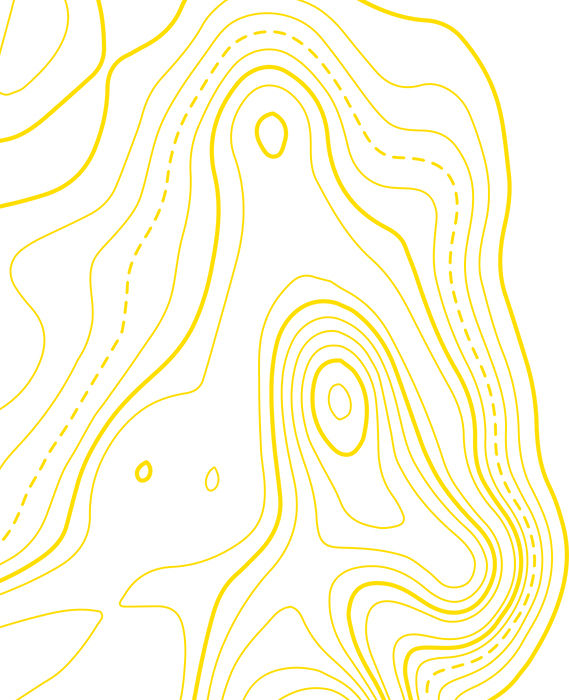
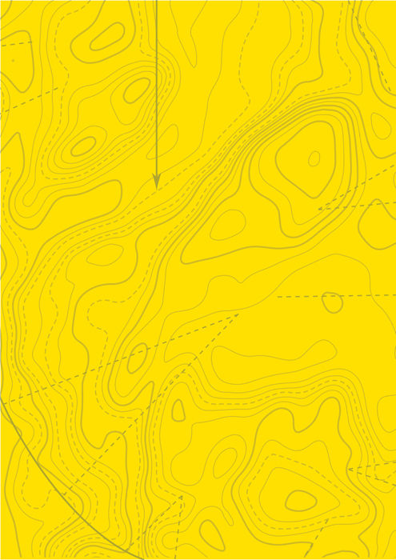

{kind=link}


版权所有 © 2021 Rockridge Press, Emeryville, California
未经出版商事先书面许可,不得以任何形式或方式复制、存储在检索系统中或传播本出版物的任何部分,包括电子、机械、影印、录制、扫描或其他方式,但根据1976年美国版权法第107或108条规定的情况除外。向出版商申请许可的请求应发送至权限部门:Rockridge Press, 6005 Shellmound Street, Suite 175, Emeryville, CA 94608。
责任限制/免责声明:出版商和作者对本作品内容的准确性或完整性不作任何陈述或保证,并明确否认所有保证,包括但不限于对特定用途适用性的保证。销售或促销材料不得创建或扩展任何保证。本书所含的建议和策略可能不适用于所有情况。本作品的销售基于以下理解:出版商不从事提供医疗、法律或其他专业建议或服务。如需专业协助,应寻求有资质的专业人士的服务。出版商和作者均不对由此产生的损害承担责任。本作品中提及的个人、组织或网站作为引用和/或进一步信息的潜在来源,并不意味着作者或出版商认可该个人、组织或网站可能提供的信息或建议。此外,读者应注意本作品中列出的网站在撰写本作品和阅读时之间可能已更改或消失。
有关我们其他产品和服务的一般信息或获取技术支持,请联系我们的客户服务部门,美国境内请拨打(866)744-2665,美国境外请拨打(510)253-0500。
Rockridge Press以多种电子和印刷格式出版其图书。某些出现在印刷版中的内容可能不会出现在电子书中,反之亦然。
商标:Rockridge Press和Rockridge Press标志是Callisto Media Inc.和/或其关联公司在美国和其他国家的商标或注册商标,未经书面许可不得使用。所有其他商标均为其各自所有者的财产。Rockridge Press与本书中提及的任何产品或供应商无关。
内页和封面设计师:Carlos Esparza
艺术制作人:Tom Hood
高级编辑:Sabrina Young
副编辑:Maxine Marshall
制作经理:Jose Olivera
制作编辑:Melissa Edeburn
插图©Conor Buckley,2020。照片Marharyta Tsapenko/Shutterstock,封面,[第ii页];EXTREME-PHOTOGRAPHER/iStock,第[16]页;josefkubes/iStock,第[16]页;Sarah-Baird/iStock,第[17]页;HSNPhotography/iStock,第[18]页;specnaz-s/iStock,第[19]页;sommail/iStock,第[57]页;Thomas_Zsebok_Images/iStock,第[59]页;Mint Images Limited/Alamy,第[120]页;bkkm/iStock,第[126]页;digihelion/iStock,第[126]页;Mantonature/iStock,第[127]页;todaydesign/iStock,第[127]页;“Patrick SECHAS”/iStock,第[128]页;Ken Howard/Alamy,第[129]页;MartinPateman/iStock,第[129]页;David Winger/Alamy,第[131]页;Colin Underhill/Alamy,第[131]页;sergunt/iStock,第[149]页;iStock,第[187]页;AlexanderZam/iStock,第[188]页;GLG/Stockimo/Alamy,第[189]页。
ISBN:印刷版978-1-64611-780-2 | 电子书978-1-64611-781-9
R1
谨以此书献给那些与我一起在林中度过时光的学生们。教学是最好的学习方式。

[前言]
[第1章:出发前的准备]
[第2章:正确的装备]
[第3章:了解地形]
[第4章:基础技能]
[第5章:野外生存]
[第6章:导航]
[第7章:急救应用]
# 前言
我于1995年加入海军陆战队,服役21年。在此期间,我曾在步兵部队、武装侦察队和海军陆战队特种作战司令部担任突击队员。在海军陆战队服役期间,以及通过其他狙击手和生存、逃脱、抵抗与逃生(SERE)训练,我成为了在多种环境和条件下生存的专家。我在世界各国不断磨练这些技能。2016年退役后,我将重心转向学术研究。然而,我继续通过教授小组和在延长的单独及团队野外活动中挑战自己来保持技能的敏锐度。
阅读这本书时,我欣喜地意识到,尽管经过多年训练,我仍有很多东西要学。无论你是新手还是专家,这本书都能教给你一些有价值的东西。这些知识可能最终会拯救你或他人的生命。此外,这本书将增强你的信心,让你的冒险之旅更加愉快。
Jason Marsteiner正是我对生存书籍作者的期望。Jason是一位父亲、丈夫、猎人、渔夫、徒步旅行者和露营者——这些身份是我们许多人共有的。他的建议既有教育意义又实用,不像某些生存书籍的作者对读者抱有不切实际的期望。Jason拥有专业知识,能够教育那些想要进行安全徒步和露营冒险的人,并为那些想要测试自己生存技能的人提供指导。
如果我能从这本书中学到东西，你也可以。这本书既为初学者而写，也为像我这样的人——拥有20年生存经验的专家而写。无论你是谁，阅读并练习本书中的技能都将使你为各种情况和环境做好更充分的准备。
格伦·威尔斯，法学博士，组织领导学硕士
美国海军陆战队退役
我是科罗拉多山地人生存有限责任公司和生存大学的所有者、创始人和运营者，在那里我向各种背景的人传授生存技能。我培训企业专业人士、特种部队、现役军人和退伍老兵。
我获得了犹他大学医学院的荒野急救员(Wilderness First Responder)认证，并通过Off Grid Medic两次更新了我的认证。我是一级POST(和平官员标准与培训)认证的搜救追踪员。我同时练习原始和现代技能，专注于现实生活中的实用技术。
我出生在科罗拉多州科罗拉多斯普林斯的美国空军学院，在附近的一个山区小镇长大，在那里生存技能是一种生活方式。我是一名猎人、渔夫、徒步旅行者、露营者、工匠、后院家园主、厨师、慈爱的父亲和深情的丈夫。我在野外度过了数千小时，磨练和练习生存技能。
通过这本书，你将获得在任何时候进入户外都有用的技能。当然，阅读不同于实践。为了发展你的丛林技能(bushcraft)，拿起这本书，然后召集你的装备、你的朋友和你的家人，前往树林。
有准备的冒险者会锻炼他们的身体和思想。无论旅程大小，仔细规划可以确保你玩得开心，并且在出现任何问题时做好准备。
在开始你的冒险之前，你应该在身体和精神上做好准备，并拥有应对挑战所需的装备。情境意识(situational awareness)是关键。通过不断关注周围环境,你将磨练你的思维并做出更好的选择。而且,如果你身体状况合理,你将能够对你的思维所见做出相对快速的反应,这将帮助你克服困难的挑战。
当户外冒险者无法接受自己的局限性或没有意识到挑战超出了他们的能力时，他们就会遇到麻烦。重要的是，你应该了解自己并接受自己的局限性。在野外，自负会致命，所以尽你最大努力将其放在一边。人类可以完成令人难以置信的任务，但如果没有适当的规划和锻炼是不可能的。
倾听你的直觉。如果在旅程中的任何时候你感觉有什么不对劲，停下来评估手头的任务和你当前的能力。你是否拥有继续前进所需的适当技能、培训、身体状况和装备?是否发生了你没有准备的事情?你是否受伤或太累而无法继续?针对荒野冒险的心理准备意味着理解意外情况时刻都在发生。可能会有一个时刻，你需要返回，或者至少重新考虑A计划。改变你的计划或决定你需要返回并不是接受失败;这只是意味着你可以改天再回来面对挑战。在做出返回或简单地停下来休息直到你准备好继续前进的决定时，你不应该感到任何羞愧。
如果你带一个朋友或一群朋友一起去，为了团队中每个人的安全，你必须了解他们的局限性。在你准备时，与团队中的每个成员谈论他们的经验、身体能力和心理舒适度。有人膝盖不好、背部不好或其他可能拖慢他们速度的问题吗?你们中有人患有糖尿病、低血糖症或需要每天服用关键药物吗?有人有心脏或肺部问题，或过敏吗?你必须问这些问题，以便做出适当的准备。
如果你需要与朋友或冒险伙伴就他们的局限性进行认真的对话，千万不要在团体环境中进行。单独把每个朋友叫到一边，进行这次非常重要的对话。这次对话不是为了让任何人感到难过——而是为了安全。要成熟、现实和支持。如果你的朋友不想认真对待这次对话，他们就不能和你一起去冒险。这真的很重要。
同时要意识到你的伙伴的竞争性，以及你自己的。一点竞争可以激励你做伟大的事情，但它也可能让你陷入危险。再次强调，不要让你的自负妨碍做出明智的决定。记住，你做出的任何决定都会影响团队中的其他人。
短暂的、自发的冒险可能不需要太多的体能训练，但相对较长的徒步旅行或冒险需要你提前计划和训练。训练时，专注于模仿你在冒险期间将要做的动作的练习。你所要做的就是弄清楚这些动作是什么，并将它们融入你的日常生活。
至少在你的大冒险前八周开始体能训练。增强主要肌肉群的力量，特别是你的腿部、肩部和下背部。深蹲、弓步、硬拉和腹部锻炼的变化应该可以帮助你发展这种力量。记住也要将拉伸和有氧运动纳入你的训练计划。
负重训练。如果你计划在长距离行进中背负重包，强化核心肌群非常重要。我最喜欢的负重训练方式之一是爬楼梯或稳定的斜坡。直上直下地攀爬,同时也要侧向移动,在向上推进时将下坡侧的腿移到另一条腿前面。随着力量的增强,爬坡时可以背上背包。慢慢增加背包的重量。
攀爬训练。在长途徒步中,你可能需要手脚并用地向上或向下攀爬斜坡。训练时,四肢着地,膝盖置于臀部下方,保持膝盖略微离地。保持背部平直,向前爬行几步。然后向后爬,接着改变方向横向移动。要增加这项练习的难度,可以背上背包。
俯卧撑和悬垂。为了增强手臂和胸部力量,在训练中加入上斜和下斜俯卧撑,以及等长悬垂(isometric hangs)。等长悬垂是指悬挂在单杠或树枝上,下巴保持在杠上方,尽可能长时间保持这个姿势。
自发的冒险固然很棒,但通常也最危险。并非每次冒险都需要长时间的计划,但一些简单的准备可以确保你远离危险。
始终携带合适的装备,了解所带每件装备的使用方法,并确保每件装备合身舒适。装备需求因体能水平、环境、预算、知识和许多其他因素而异。在规划行程时,始终假设目的地缺乏配套设施。如果目的地没有淋浴、自来水、厕所、电力或烧烤炉/火坑,要准备好所需的一切。
记住核心生存法则——“三法则”:
•人在缺氧情况下可以存活三分钟。
•人在没有庇护所的情况下可以存活三小时。
•人在没有水的情况下可以存活三天。
•人在没有食物的情况下可以存活三周。
让我们从装备的角度来分析这些法则。
三分钟无氧不仅仅指呼吸;三分钟无氧意味着氧气无法通过血液输送到大脑。没有血液,没有氧气,就无法生存。你最重要的装备在急救包里。本书后续将详细讨论急救包应该包含哪些物品。
三小时无庇护是指在极端环境中暴露三小时。通过衣物、庇护所和火来减少暴露在恶劣环境中的时间。这条法则意味着要为预期和意外情况准备合适的衣物,以及携带生火用品。
三天无水在高温环境下或剧烈运动时很容易变成一天。为避免缺水,你的装备应包括水瓶和净水方法。
三周无食物在大多数情况下是个极限。如果你不只是躺在那里等待救援,而是有所行动,你在三周之前就需要食物。携带食物和获取更多食物的方法,以防储备耗尽。
简而言之,即使是简单的一日徒步,你也应该随身携带食物、水、庇护所、火种、某种急救用品和信号装置。
拿一个小背包。用五分钟或更少时间,在房子里走动并收集能满足”三法则”的物品。跳出思维定式,思考如何满足这些法则。将背包重量控制在10磅以下。你做得怎么样?
在户外活动需要大量能量。规划让队伍中的每个人吃饱并不总是简单的,尤其是长途荒野旅行。
如果我要徒步一天,我总是带够两天的食物。如果我要出去五天,我会打包七天的食物。你永远不知道何时会在外面待得比预期更久。在准备时,记住不仅要关注要吃的食物,还要关注烹饪所需的工具。
提前思考:如果食物储备耗尽,你将如何获取食物?从野外获取食物并非易事,需要相当多的训练和研究。对于食用野生植物,除非你110%确定知道那是什么,否则绝不要把任何东西放进嘴里(识别野生植物将在[第5章]中介绍)。
除了野生植物,你还可以通过诱捕、狩猎和捕鱼来获取食物。你需要携带现代工具来完成这些,或者需要知道如何制作更原始的器具来获取食物。你可能不会每次旅行都带猎枪,那么你能带什么?我的首选工具是刀。用一把刀,我可以制作各种原始的狩猎或诱捕工具。我还总是携带50英尺的伞绳(paracord)和一个小到可以放进口袋的生存钓鱼包。你可以购买预制套装或自己制作一个。本书后续将介绍钓鱼包应该包含哪些物品。
但在你四处追赶森林中每只移动的动物之前,让我们简要谈谈正确的食物规划和携带食物。携带高蛋白、复合碳水化合物和健康脂肪的非易腐食品是明智的选择。如果你要进行一日徒步,带新鲜水果和蔬菜是可以的,但你的背包里应该始终有充足的非易腐食品储备。
做最好的希望,但要为最坏的情况做准备。“防走失”是规划冒险时的首要任务。在你开始打包行李或走出家门之前,你应该对自己进行防走失准备,也就是采取措施减少迷路的可能性,或在迷路时帮助救援队找到你。
至少告诉一个人你要去哪里、你要做什么、你会离开多久、你和谁一起去、你使用什么交通工具开始冒险,以及每一个细节,包括你穿的靴子。给你的联系人一张你自己、你的衣服和鞋子的最新照片。不要偏离你的计划。如果你必须偏离计划,请联系你的联系人告知他们。
与紧急联系人分享关于你鞋子的信息很重要,因为它们会留下足迹。如果你失踪,一个优秀的追踪团队会发现这些信息很有价值。用鞋子压在铝箔上制作鞋底模具。或者,拍下鞋底的照片并将照片发送给你的联系人。如果你正在制作鞋子模具,再做一个模具放在你的车里,连同地图和其他书面行程计划一起。
在我出发旅行之前,我会分享我的目的地和路线。如果某个区域有GPS坐标,我会将它们发送到我联系人的手机上。如果我知道有危险区域,我会向我的联系人解释这些地点。注意:如果你选择一个亲密的亲人作为你的防走失联系人,一旦出现问题他们可能会恐慌,可能不会立即记住你告诉他们的所有事情。写下所有内容,这样你就不用在紧张时刻依赖你亲人的记忆。书面信息也可以更容易地与搜救队分享。
不仅要查看预报的天气,还要查看冒险地点的历史天气趋势。了解日出时间、日落时间和日照小时数。根据日照时间和天气模式规划你的活动。
研究你打算前往区域的地形图,识别潜在的危险地点,如悬崖、陡坡和其他棘手的地形。确定你何时必须穿越这些区域,考虑多种情况,并制定策略。
考虑将与你同行的其他人。他们的身体限制、医疗需求、技能水平和户外知识是什么?找出他们的防走失联系人姓名、紧急联系人,以及如果他们或团队中的其他人迷路或受伤该怎么办。你们中有人接受过心肺复苏、急救、第一响应者或野外医疗培训吗?如果有,你的培训范围是什么?如果你没有这种培训,你认为在开始冒险之前接受培训是否足够重要?

你团队中的每个人都具备与你选择的冒险相匹配的身体条件。
你已经与其他人讨论了相关的身体和医疗问题及病史。
你已经留下了计划的书面文件,包括地图和到目的地的路线,以及你自己和装备的最新照片。
你已经制作了登山靴底部的印模和/或拍摄了照片。
你已经向你的防走失联系人详细解释了你的冒险计划。
你已经查看了该地区的天气预报和天气历史。
你已经使用地形图和/或其他在线资源规划了你的路线。
你的装备至少涵盖了三法则的基本生存需求。
你团队中的其他人都有自己的装备来满足基本生存需求。
你已经测试了每件装备的耐用性、实用性和舒适性。
你已经为每一天准备了适量的食物,外加额外一两天的食物以应对意外情况。
你已经研究并了解了该地区的可食用和有毒植物。
你的装备中包含了在打包的食物用完后获取食物的工具。
你的装备中包含了可用作信号装置的工具。
你已经获得了基本的急救培训,最好是野外急救培训。
你已经与你的冒险伙伴制定了应急计划,说明如果团队中有人迷路或受伤该怎么办。
你已经确保团队中的每个人都了解并同意你的计划。
你已经做好了心理准备,如果有什么看起来或感觉不对劲,就掉头回家。
简单来说,一个人在没有基本必需品的情况下不应该冒险进入荒野。你应该始终至少携带最低限度的装备来满足基本的生存需求。也就是说,装备的质量很重要。在我的职业生涯中,我经常听到有些装备总比没有强的说法,但我坚信这种逻辑是错误的。劣质装备会给你一种虚假的安全感,因为它可能在你最需要的时候损坏。在关键情况下装备失效可能会让你付出生命的代价。你的装备应该耐用且具有多种用途。那么,什么是满足基本需求的最佳装备呢?
你想要的和你需要的之间存在很大差别。当你考虑生存问题时,有几个核心物品属于”需要”类别。在你的装备需求清单中,排在首位的应该是在荒野中最难重新制作的物品。考虑到这一点,按重要性排序,对生存最重要的五件物品是:
耐用雨披(用于防护自然环境,必要时可用作庇护所)
40盎司单层金属水壶,如下图所示。
这五件物品将满足你的生存优先事项,或符合你的三法则。当然,我们大多数人更喜欢携带的不仅仅是绝对必需品。以下部分介绍了对大多数荒野探险者来说同样重要的物品。
为了携带你的必备物品,你需要一个好背包。虽然有很多类型的背包可供选择,但对于认真的户外运动者来说,有两种主要款式最好。
徒步背包。 这些背包轻便舒适。有许多品牌和设计可供选择;货比三家找到适合你需求的背包。也有专为女性探险者设计的背包,在肩带、重量分配和尺寸方面都有变化,以获得更好的贴合度。大多数徒步背包都配有舒适的腰带,帮助分散背包的重量。大多数背包还由鲜艳的材料制成,可以用于发信号,因为它们很容易被发现。
徒步背包有一些缺点。由于这些背包由轻质材料制成,织物不是特别耐用,尽管优质背包的缝线和拉链很结实。鲜艳的织物在你迷路时是优点,但在你试图避免被发现时(比如打猎时)则是缺点。优质背包往往价格不菲。

战术背包。 这类背包非常耐用,但总的来说不如徒步背包舒适。战术背包包括许多附着点(称为MOLLE),因此你可以轻松地将任何想要的配件附着到背包外部。战术背包和徒步背包一样,有各种尺寸可供选择。
不幸的是,没有专门为女性身体设计的战术背包。这些背包的耐用性使它们很重。如果重量是一个问题,那么战术背包不适合你。并非所有战术背包都配有腰带,即使配有腰带的也远不如徒步包舒适。一个好的战术背包也可能很贵。战术背包往往是分隔式的,这在携带大量装备时可能会碍事。使用战术背包携带大量装备的例外是使用大型军用背囊,它们是专门为此目的设计的。
以下部分讨论你应该随身携带的八个必备套装的内容。这些包括:
工具套装。 固定刀片刀和其他主要工具。
生火套装。 点火源和引火物。
庇护套装。 衣物;用于遮盖、包裹和垫睡的物品;缝纫/修理用品;以及绳索或绳索。
水分套装。 水源获取、过滤、净化和容器。
营养套装。 现成食物以及食物获取和准备用品。
导航套装。 地图、指南针和测距珠(ranger beads)。
通讯套装。 手机、无线电、信标和信号装置。
创伤/急救套装。 用于处理出血、呼吸和循环支持以及低体温症的用品。
工具套装中的物品不属于其他任何套装类别,但这些物品将帮助你完成与其他每个套装相关的任务。这些必备物品应该耐用可靠。
全龙骨固定刀片刀。 一把好刀应该始终是你的第一物品。你的刀应该握在手中感觉舒适,并且应该是全龙骨的,这意味着构成刀的金属从刀片尖端一直延伸到刀柄末端。
手锯、斧头和砍刀。 如有必要,这三件物品可以用你的刀替代。但我建议至少在背包里放一把折叠手锯。手锯将帮助你快速处理木柴或砍倒小树搭建庇护所。
多功能工具(Multitool)。 多功能工具是一种可折叠的钳子，手柄内置工具套件。它应该配备钢丝钳、小锯子、优质刀片和锥子。你可以使用这个工具制作鱼饵和陷阱用的钢丝，或者修理损坏的装备。钢丝钳和钳子在某些医疗情况下非常宝贵，比如从身体上取出鱼钩时。
手电筒和头灯。 你的手电筒、头灯或两者都应该是可充电的；否则，你需要携带电池。不要忘记你的太阳能充电器。你们团队中的每个人都应该有自己的头灯。
登山扣和护林员橡皮筋(Carabiners and ranger bands)。 这些多功能物品可以帮助你将物品固定在背包上，或帮助你在野外执行其他任务。护林员橡皮筋是厚橡皮筋，可用于固定骨折的手指、保持容器关闭、改善刀具的握持力，以及作为临时隔热垫。
绳索(Cordage)。 绳索或绳子有助于完成钓鱼、狩猎、搭建庇护所和攀爬等任务。户外情况下最好的绳索是伞绳(paracord)或银行线(bank line)。550伞绳额定承重550磅，由外层护套和七条较小的内股组成。它可以被拆开，因此你可以只使用护套或较小的股线来钓鱼、缝纫或制作陷阱。
你可能想要根据你将要去的地方、在荒野中停留的时间以及你将要进行的活动类型，向你的工具包中添加其他物品。让你的工具包适应你的特定需求。
你需要生火套件中的物品来生火和维持火源。如果你是一位经验丰富的丛林生存者(bushcrafter)，你可能认为不需要这些物品，因为你可以用弓钻(bow drill)生火。不准备这些用品是自负妨碍良好决策的一个例子。尽管你可能有不使用现代装备就能生火的知识，但这样做需要付出巨大的努力，不应该是你生火的主要方式。我们将在第4章讨论生火技术。
点火源。 打火机和火柴不是坏选择，但在大风或潮湿时都不能很好地工作，而且当你的手很冷时很难拿住。打火机在高海拔地区或温度降至冰点以下时可能无法工作。你可能会考虑太阳能点火源，尽管这些不可靠，因为它们需要阳光才能工作。一个好的主要点火源是铁铈棒(ferrocerium rod)或ferro棒。铁铈是一种自燃金属合金，当快速氧化时可以达到5,000°F以上的温度，这意味着当你用另一块金属或刀在ferro棒上刮擦时，会产生非常热的火花。一根铁铈棒可以点燃数千次火。
引火物(Tinder)。 引火物包括你随身携带用来点燃的物品。你可以从天然材料中获取引火物，只要有这样的材料，你就应该这样做。但要始终在背包里准备一个备用品。
一个很好的备用引火物来源是棉球和凡士林，因为它们既便宜又容易在家制作。将一把棉球(10到20个)和每10个棉球1满汤匙凡士林放入三明治袋中。将每个棉球的外部彻底涂上凡士林，然后用拳头挤压棉球，使凡士林渗透到棉球表面。不要撕开棉球。将这种预制引火物储存在防水容器或旧药瓶中。其他选择包括烘干机绒毛和凡士林、护林员橡皮筋、木屑或肥松木(fatwood)(被树液或易燃树脂浸透的松木)。你也可以购买WetFire引火物等产品。
衣物。 你的庇护所套件将占据你装备的大部分，从衣物开始。在寒冷天气气候下需要知道的最重要的事情是棉花会致命。棉花吸收并保持水分，一旦变湿就会失去隔热价值，这意味着当温度下降时，你会冻僵。除非你在炎热环境中探险，否则请将棉花排除在你的装备之外，即使在炎热环境中，你也应该准备非棉质备用品。
我的装备中只有一件是棉质的：我的阿拉伯头巾(shemagh)(一种传统上在中东佩戴的大型棉质围巾)。阿拉伯头巾有一些非常好的用途，包括从植被上收集露水。你可以将阿拉伯头巾作为头巾佩戴，以保护自己免受阳光或风的侵袭。你可以将它用作水过滤器的预过滤器；止血带、绷带或吊臂；以及装备或木柴的运输工具。
除了我的围巾，我所有的衣物都是羊毛或吸湿排汗的合成材料。我更喜欢羊毛，因为它防火，即使你湿了也能保暖。在寒冷或潮湿天气穿衣时，使用分层系统。
• 基础层。 薄而轻的吸湿排汗羊毛或合成织物构成你的基础层。想想保暖内衣和袜子。这一层应该贴身，绝不应该包含棉质。
• 中间层。 宽松的轻质羊毛绒、鹅绒或羊毛服装作为你的隔热中间层。你每天都能看到这一层。裤子、衬衫、毛衣等。
• 外部保护层。 这种耐用的通风层可以保护你免受风、雨或雪的侵袭。外部保护层必须有适当的通风，以允许汗水蒸发和逸出而不让水分进入。你的外层是你的夹克和保暖裤。
• 外壳。 防风防水，你的外壳是你的雨具和防风衣。
在选择衣物时，确保有足够的衣物覆盖身体的每一寸。不要忘记帽子、手套和鞋子。干净、干燥的袜子极其重要，你应该始终随身携带一双备用袜子。打包一个缝纫包，这样你就可以修补在路上可能出现的小孔或撕裂。
睡眠系统。你庇护所的其余部分是你的睡眠系统。你的睡眠系统包括睡在下面的东西——如防水布(tarp)、帐篷或雨布(rain fly)。你还需要一些东西睡在上面，让你保持舒适并与冰冷的地面隔离。你可以使用睡垫或吊床(hammock)。你选择睡在什么里面取决于你想携带多少重量以及目的地的天气和气候。选项包括睡袋、羊毛毯、露营袋(bivy sack)或睡袋内胆。
这个工具包包括收集、携带和使饮用水安全所需的一切。请记住，水过滤和水净化是两回事。水过滤去除水中漂浮的沉淀物，可能会使其气味和味道更好。净化去除病毒和细菌，使你的水更安全饮用。煮沸可以净化水，但不能过滤水。你可以将水通过沙子和木炭来过滤，但这个过程不能净化水。我们将在第4章讨论定位、获取和准备水。
头巾(Shemagh)或大棉围巾。你的头巾也是水合工具包的一部分，因为它可以用来获取水，并作为预过滤器来延长任何过滤/净化系统的使用寿命。
单层金属水瓶或水壶。你可以直接在单层金属瓶或水壶中煮沸水；你不能在塑料或保温瓶中煮沸水。美国疾病控制与预防中心(CDC)建议你煮沸水三分钟以杀死任何细菌和/或病毒。
净水片(基于氯、二氧化氯或碘)。这些药片净化水，使其安全饮用。务必遵循包装上的具体指南，了解每片药片可以净化多少水。净水片不是我的首选，但我携带它们以备紧急情况。
水过滤器/净化器。大多数商店购买的水过滤器是超滤(UF)净水器，因此它们使用压力迫使水通过半透膜以去除颗粒、细菌，有时还有病毒。购买水过滤器时，考虑可打包尺寸、重量和过滤器的微米级别。几种价格实惠的水过滤器提供0.1微米过滤，这意味着它们可以过滤掉99.99%的所有细菌。如果你要前往病毒是问题的地区，请确保你的水过滤器/净化器也可以过滤掉病毒。
水袋背包。水袋背包提供大容量存储空间，并通过手边的饮水管轻松保持水分。在线水过滤器也可以连接到水袋背包，使过滤过程更简单。
这个工具包包括你带来的食物、准备食物所需的物品，以及在供应用尽时获取更多食物所需的物品。
烹饪用品。一个2夸脱的烹饪锅可以让你制作大餐或炖菜而不会溢出产生的汤汁。将物品装在锅内以充分利用空间。计划在背包中包括一个轻量级背包客炉灶(紧凑型钛木炉或丙烷炉)，以及一个适合金属水瓶底座的节省空间杯子和勺子、叉子或勺叉组合餐具(spork)。
食物获取。为了应对食物供应丢失或耗尽的意外情况，携带钓鱼工具包(包括鱼钩、钓线、铅坠(sinkers)、转环(swivels)、浮漂(bobbers)、塑料蠕虫、诱饵和飞蝇)、诱捕工具包(铁丝、钢缆和锁)和狩猎工具包(矛头和箭头)。包括伞绳(paracord)和带钢珠的弹弓(可以用岩石替代)。我们将在第5章讨论诱捕和钓鱼。
我为你的导航工具包推荐的物品是低科技类型的。我们将在第6章讨论如何使用这些工具找到方向。
地形图。户外商店销售的大多数地图的比例为1:63,360，地图上的一英寸等于地球上的一英里。我发现更好的选择是1:24,000的比例，它提供更多细节，并且是搜救最常用的比例。你可以从USGS.gov等网站打印地图，这样你就可以为你打算访问的位置获得精确的地图。
指南针。一个好的指南针至关重要。选择定向指南针或透镜指南针(lensatic compass)。我们将在第6章讨论如何使用你的指南针。
游骑兵珠(Ranger beads)。良好导航工具包中的最后一个工具是游骑兵珠，也称为步数计数珠。游骑兵珠用于跟踪你在陆地上行进的距离。
信号和通讯设备用于与队伍中的其他人保持联系，或在你迷路时帮助其他人找到你。
手机。许多迷路的冒险者出于某种原因决定将手机留在身后。我建议在偏远地区时将手机放在背包中的防水容器中。即使没有信号，你也可能能够拨打911或发送短信求助。
双向对讲机。如果你和其他人一起旅行，你们每个人都应该有一个短程无线电或对讲机(walkie-talkie)。
信号装置。 信号装置分为视觉型和听觉型，旨在引起他人的注意。这些装置可以包括信号镜、哨子、旗帜或其他颜色鲜艳的材料、信号弹、荧光棒(glow sticks)、手电筒、频闪灯、激光、测量带或永久性记号笔。选择携带哪些工具将取决于您的个人偏好以及您将要冒险的地形、时间和气候。
个人定位信标。 如果您经常前往偏远地区，请考虑购买个人定位信标(PLB)或卫星信使。对于真正偏远的地区，PLB是您的最佳选择。PLB会发送求救信号(但不能做其他事情)，并且您将无法取消信号。不要意外按下该按钮。卫星信使在全球范围内的可靠性较低，但具有其他功能，例如导航、天气预报以及发送自定义消息或发布到社交媒体的能力。
雪崩信标。 如果您是野外滑雪者、滑雪板爱好者、雪鞋行走者或极限冬季冒险家，雪崩信标(avalanche beacons)是必备品，同时必须有朋友与您同行。你们每个人都需要佩戴收发器。如果您被雪崩掩埋，您的朋友可以将他们的设备切换到搜索模式，并希望能够快速找到您。
在生存情况下，我携带两种类型的急救包：个人急救包(IFAK)和创伤包。我们将在第7章详细讨论急救协议。
个人急救包。 IFAK比您典型的商店购买的急救包要复杂得多。IFAK体积小，主要用于为携带它的人提供用品。您的IFAK应包括：
创伤包。 创伤包携带用于补充IFAK的用品，也可用于其他人或更大的医疗紧急情况。
您的个人创伤包会因您的培训和允许的可打包空间而有很大差异。考虑到虽然您可能没有接受过培训，但您的救援人员可能接受过培训，在您的包中拥有这些用品可以帮助他们挽救您的生命。以下列表中的所有物品可能无法装入您的包中，但在理想情况下，您应该拥有这些物品。如果您无法将所有物品装入背包，请优先考虑您的IFAK，并携带额外的纱布和胶带以及一些较小的物品。获得培训，如荒野急救员课程，以便您知道如何使用这些物品中的每一个以及在没有所有物品的情况下如何即兴发挥。
550伞绳(Paracord)（日间徒步50英尺/过夜100英尺/长途旅行200英尺）
金属水壶（40盎司，单层）
金属节省空间杯
滤水器/净水器
头灯
登山靴
户外服装（基础层、中间层、外层）
靴套(gaiters)（穿越雪地时）
头巾/阿拉伯方巾(shemagh)
雨具
缝补/修理工具包
食物
复合维生素
求救哨
短柄斧/斧头
大砍刀(Machete)
铲子（手持式）
太阳能充电器
GPS
定位信标
无线电（双向）
手电筒
备用电池
两夸脱烹饪锅
防晒霜/驱虫喷雾
工作手套
登山杖
多功能工具
太阳镜
磨刀器
水袋
狩猎工具包
信号镜
信号弹
卫生纸
肥皂
牙刷/牙膏
可重封袋
垃圾袋
弹弓
野营炉
强力胶带
电工胶带
雪鞋
冰爪(Crampons)

了解你将要穿越的气候和地形至关重要。你的需求和风险会因地形和天气而异，请相应地规划行程。
通过研究气候，你将为极端温度、雨、雪或风做好更充分的准备。无论你身处极地气候还是热带气候，都可能遇到各种地形特征，包括山脉、山谷、湖泊和河流。事实上，某些地形特征会形成自己的微气候。在从温带气候开始的登山过程中，仅几英里的攀升就可能遭遇极地气候。每种气候下的每种地形都提供独特的资源、优势、挑战和危险。应对气候和地形挑战的最佳方法是携带适当的装备并在出发前做好功课。
极地气候占地球表面不到20%。这些气候缺乏温暖的夏季，通常全年几乎都在冰点以下。如果一个地区的月平均温度不超过50°F（10°C），则被认为具有极地气候。在极地气候中，你可以看到全年冰封的湖泊、广阔的无树原野、冰川和大量的雪。在许多极地地区，巨大的冰盖覆盖着大地，这意味着植物无法生存，动物生命稀少。极地气候的空气极其干燥，全年降雨量很少。任何形式的降水通常都是雪。
地点。 阿拉斯加北部属于极地气候。北极（北极点）和南极（南极点）属于极地气候，冬季漫长寒冷，夏季凉爽。全球各地的微气候中都存在极地条件，例如喜马拉雅山脉的高海拔地区。
装备。 如果你要在极地气候的荒野中探险，需要准备由羊毛或合成材料制成的极端寒冷天气服装。不要穿棉质衣物！你的服装应包括厚夹克或派克大衣(parka)、雨衣、防水裤、防水手套或连指手套、羊毛帽、颈套、靴套、高筒防水靴、羊毛袜以及其他保持温暖和干燥所需的物品。在夏季，某些极地或近极地地区的蚊子很活跃，请携带个人防虫网或带网的帽子。
健康/安全。 如果你计划前往山区或冰川，你应该有经验或由有经验的向导带领。不要单独行动。
在进入极地气候之前，要知道如何预防和治疗体温过低、冻伤、冻疮和战壕足(trench foot)。雪和/或冰不应该被”食用”，因为它们需要宝贵的热量来融化，并会降低你的核心体温。如果你要使用雪来补充水分，务必先将其融化。
北极熊是一种危险，你的队伍中应该有人携带能够制服熊的步枪。与所有野生动物保持距离，但要知道，如果你打包的食物供应耗尽，它们将成为你的主要食物来源。
食物获取。在极地气候中，天然食物来源稀缺。如果你没有随身携带物品，就无法获得它。在极地气候的边缘地带,冰层较薄且有植被生长,你可能会在夏季找到植物,全年都能找到动物。这种气候下的食物来源包括猎捕海豹、驯鹿或小型猎物,以及在冰面上钓鱼。如果你成功狩猎,尽可能多地食用动物,尤其是在生存状况下,包括心脏、肺和肾脏等内脏器官。但是,不要食用肝脏;许多极地动物的肝脏含有有毒水平的维生素A。
一种被称为”驯鹿苔”(caribou moss)的植物生长在极地气候边缘的地面和岩石上。虽然驯鹿苔在其天然形态下对人类有毒,但驯鹿会食用它。这种地衣可以通过长时间煮沸来去除其毒素,但这样做会去除大部分营养成分。你可以通过食用驯鹿胃中的驯鹿苔来安全食用,因为动物胃中的微生物已经将其分解。这种部分消化的地衣富含碳水化合物,这是你仅靠食用驯鹿肉无法获得的。
极地地区发现的可食用浆果包括岩高兰(crowberries)、低矮蔓越莓(实际上是越橘)(low-bush cranberries)、蓝莓、鲑鱼莓(salmonberries)和云莓(cloudberries)。这些浆果可以生吃,也可以在冷冻前与糖和牛奶混合制成美味佳肴。Akutaq是这种富含营养和卡路里的混合物的当地名称。
地形问题。冒险者经常被极地荒野吸引去攀登山脉。极地山脉陡峭、崎岖不平且极其危险。除非你有经验丰富的向导或大量的训练以及适当的装备,否则不应冒险进入这些山脉。极地山脉意味着高海拔、氧气减少和高原反应。在出发前,了解急性高山病(AMS)、高原肺水肿(HAPE)和高原脑水肿(HACE)的症状。如果你出现任何这些症状,请迅速下降。有关治疗高原反应的更多详情,请参见第7章。
在极地地区,山谷可能包含被冰雪覆盖的河流和湖泊。特别是如果你正在过渡到较温暖的温带气候,要注意薄冰,在穿越任何冰冻水域时要格外小心。
海岸线也是从极地气候过渡到温暖气候的区域。冰和冰川可能非常不稳定。留意冰面上的大裂缝,如果看到它们,请迅速离开。裂缝在冰和冰川边缘很常见,但也可能在距离边缘数百英尺处发现。如果裂缝裂开,预计会长时间坠入冰冷的水中,然后被一座冰山压在上面。注意脚下!
温带气候经历所有四季,全年温度变化很大。世界上大多数人口生活在温带气候或其附近;因此,你的大部分冒险也将在这种气候中进行。温带地区包括生命和资源丰富的生态系统,使这些地区适宜居住,但由于冒险者必须为许多变量做好准备,因此也很危险。
位置。温带气候有两种类型:海洋性和大陆性。海洋性气候受海洋影响,全年温度更加稳定。加利福尼亚州和英国是温带海洋性气候地区的好例子。在更内陆的地方,你会开始体验到夏季更温暖、冬季更寒冷的大陆性气候。在美国,构成大陆分水岭一部分的落基山脉充当了阻挡从西方吹来的海洋风的屏障。温带气候中受欢迎的荒野目的地包括北美大部分地区、西欧、日本、智利、南非和南澳大利亚的地区。
装备。为所有季节做好准备,以应对快速、频繁的天气变化。即使在夏季,你也应该带上轻便的夹克、一双备用的羊毛袜和徒步靴,如果你穿着凉鞋等较轻的鞋类可以换上。多功能物品非常适合这种气候。例如,雨披可以穿戴,也可以用作紧急庇护所,还可以用作集水器。金属水瓶可以装水,也可以用来煮沸和净化水、烹饪食物,或者如果你在里面装热水、密封严实并用T恤或其他布料包裹,还可以用作加热器。有关更详细的装备建议,请参见第2章。
健康/安全。地下水携带细菌,尤其是在靠近人类居住区时。在温带地区净化水总是最好的选择。
黑熊和棕熊、响尾蛇、铜头蛇、水腹蛇(water moccasin)和美洲狮是温带气候中的主要捕食者。然而,你遇到的每一种动物都是野生动物,应该这样对待。即使是鹿、麋鹿等食草动物,尤其是驼鹿,也应该尊重并保持足够距离,因为它们很容易变得有攻击性。
温带气候的天气模式每天甚至每小时都在变化,使其成为最难准备的环境之一。因此,在外出时,你应该准备多层衣物和基本的生存工具包,以便生火和搭建临时紧急庇护所。
温带气候区充满了食物，只要你知道该寻找什么，并且愿意走出自己的舒适区。除了少数例外情况,你几乎可以食用这些地区所有会走、会爬、会飞或会游的生物。避免食用颜色鲜艳或多毛的昆虫,但所有其他昆虫在烹饪后都可以食用。蚂蚁、白蚁及其幼虫是唯一可以安全生吃的昆虫。昆虫在营火上很快就能煮熟,只需短暂加热就能杀死它们可能携带的寄生虫。你可以将昆虫在水中煮沸几分钟,但为了口感和质地,我更喜欢在热石头上或热炭火上轻轻烘烤,直到它们变成稍深的颜色或金黄色。根据炭火温度,烘烤昆虫可能只需几秒钟(如果炭火很热)或一两分钟。避免食用蟾蜍和颜色鲜艳的青蛙,因为它们的皮肤可能有毒腺。犰狳可能会将麻风病传播给人类。老鼠、大鼠、负鼠和其他以废物为食的大型啮齿动物可能携带狂犬病或鼠疫等疾病,但它们并非总是携带者。在清理和烹饪这些动物时要格外小心。
这种气候下生长着数百种可食用植物,但也生长着许多有毒植物。重要的是,你应该充分了解植物,否则就有食用有毒或毒性植物的风险。关于野生浆果的一般规则是:80%的黑色或蓝色浆果可食用,50%的红色浆果可食用,80%的白色浆果有毒。虽然这个一般规则是一个很好的起点,但不要赌概率。也要了解你的浆果!
在温带气候中,你可能会遇到各种地形和过渡区,这并不是坏事。只需做好功课,这样你就知道如何准备。
温带气候中的山脉远不如极地气候中的山脉险峻,但在海拔11,000到12,000英尺以上,树木无法生长。这个界限被称为林木线(timberline)。如果你走得远超过林木线,气候很可能表现得更像极地环境而不是温带环境。
水流向山谷,带来大量资源。要谨慎行事,因为山谷——尤其是狭窄的山谷或峡谷——容易发生山洪暴发。如果你在狭窄山谷中时开始下大雨,要寻找高地,直到雨停并经过一段时间。请记住,虽然你所在的地方可能没有下大雨,但上游可能正在发生倾盆大雨。如果你听到像货运火车一样的声音向你冲来,尽快前往高地。不要向下游跑;要跑上最近的山坡。
干旱气候,也称为沙漠,其特点是缺水,这限制了植物生长和动物生命。沙漠中的植物和动物通常较小,并具有独特的适应能力以在这种恶劣环境中生存。虽然沙漠白天可能很热,但夜晚往往极其寒冷。
这种气候的范围远远超过像撒哈拉沙漠或死亡谷这样著名的沙漠。美国西南部的大部分地区,包括犹他州的摩押、大峡谷和约书亚树国家公园等热门目的地,都属于干旱气候。印度西北部、南非和澳大利亚大部分地区也因降水不足而被视为干旱地区。
在干旱环境中,穿着吸湿排汗的内衣和轻质、浅色、宽松的棉质中层衣物,以保持凉爽并防止阳光照射皮肤。携带一把梳子来清除皮肤上的仙人掌刺。为晚上和睡觉准备保暖衣物,因为日落后沙漠温度会急剧下降。
在干旱气候中生存的关键是避开直射阳光,然后找水。做到这两点的最佳方法是找到一个有阴影的峡谷或山谷。
在峡谷中,你不仅可以找到避阳处,还可以找到可能在地下有水的干涸河床或冲沟(washes)。寻找水的最佳时间是清晨,此时凝结水在岩石和植被上聚集。寻找全天阳光很少的巨石或岩层附近的阴凉区域,向下挖掘看看土壤或沙子是否潮湿。沙漠峡谷中的巨石顶部也可能有凹陷或碗状结构,可以收集水。
注意植被也能帮助你找到水。如果你发现大树,如三角叶杨(cottonwood)或柳树或其他绿树,你会在那个位置找到水。从仙人掌中获取饮用水的可能性是一个误区。不仅难以获取水,而且酸性很高,会让你生病。如果你确实找到了水,尽可能将其煮沸。参见第4章了解净化水的最佳实践。
如果你找不到水,你最好也是唯一的生存策略就是离开沙漠。不要原地不动。只在太阳不出来的傍晚和清晨赶路。在太阳升起之前,找一个阴凉的地方,白天休息以保存体力和水分。
记住,沙漠夜晚非常寒冷,由于你的身体已经适应了白天的炎热,夜晚的寒冷会被放大,这意味着找到庇护所和生火非常重要。寻找可以阻挡风和阳光并能保护你免受动物侵害的洞穴或巨石。不要害怕建造石头屏障来阻挡动物和恶劣天气。收集干草、灌木和枯死的仙人掌用于生火。
响尾蛇和蝎子在许多干旱气候中猖獗出没。蝎子会钻进岩石、碎片堆和地面上的旧木头下面。因为蝎子以昆虫为食,所以要当心其他昆虫可能栖息的黑暗地方。翻动岩石或收集柴火时要格外小心。响尾蛇无法调节自己的体温。如果你在阳光下感到温暖舒适,那么响尾蛇也会出来享受阳光。如果你在寻找阴凉处,响尾蛇也一样。要小心高草丛、黑暗的洞穴和岩石壁架,蛇可能会躲在那里避开直射的阳光。
获取食物。 当你留意蛇和蝎子时,记住它们也是很好的食物。捕猎它们时要格外小心,使用叉形棍将响尾蛇的头按在地上,或用容器捕捉蝎子。其他动物白天不会出来,所以一定要在营地周围设置大量陷阱,以便在天气较凉爽的夜晚捕捉它们。
地形问题。 干旱山区没有过多的水源,也缺乏遮阳处。虽然可能在山区找到资源,但如果你无法躲避阳光,那么为了获取这些资源而消耗的水分是不值得的。
干旱气候中的山谷和峡谷可能是你的朋友,因为它们可能提供集水点、阴凉处和其他资源。然而,在暴雨期间,它们是你的敌人,因为它们非常容易发生山洪和泥流。由于流域不稳定,洪水风险可能会急剧变化,因此不要依赖历史洪水数据来指导你的行动。当乌云在你上方或上游翻滚而来时要保持警惕。
所有干旱地区都存在哈布风暴(haboob)或严重沙尘暴的风险。在这些风暴期间要格外小心保护你的眼睛、鼻子和嘴巴,因为吹来的沙子和粘土会损伤你的眼睛,并可能导致严重的呼吸窘迫。阿拉伯头巾(shemagh)或大棉围巾在沙漠气候中被广泛用于保护头部和面部。
当考虑在热带或亚热带气候中进行野外探险时,我发现将这种气候的地区想象成有两个季节会很有帮助:雨季和有些降雨的旱季。在哥斯达黎加的丛林中度过了几周后,我通常将热带气候与丛林联系起来,但情况并非总是如此;稀树草原也被认为是热带气候,但降雨量要少得多。
丛林是一个美丽但危险的地方。无论你看向哪里,都有鸟类、猴子、爬行动物、青蛙、野猪,甚至大型猫科动物。子弹蚁(bullet ants)、大型狼蛛和其他令人毛骨悚然的爬虫大量存在。一旦太阳在下午晚些时候开始下降,由于头顶茂密的树冠,丛林很快就会变暗。
地点。 美国唯一真正的热带地区是夏威夷。美国最南部的地区,包括南加州、佛罗里达州南部和德克萨斯州南部,都是亚热带地区。在世界各地,受欢迎的热带和亚热带探险目的地包括哥斯达黎加、亚马逊盆地、澳大利亚北部和大洋洲的大部分地区。
装备。 如有疑问,就携带当地人携带的装备。当我在哥斯达黎加时,我们的当地向导携带了一把用得很旧的砍刀用于开路,还有一把锉刀(mill file)来保持它的锋利。他还携带了一大袋大米、一个大水瓶、一件结实的雨披、一个BIC打火机,以及切成条状的自行车内胎,这样他就可以轻松生火。我还建议携带驱虫剂、带有防虫网和耐用底层或睡垫的吊床睡眠系统以抵御蚊子、病毒级水过滤器、耳塞(热带夜生活很吵)和耐用的雨具。
健康/安全。 水传播病原体是热带环境中的一个重大问题。霍乱、痢疾、隐孢子虫病和贾第鞭毛虫感染通过水污染传播,可引起痉挛、发烧、呕吐和腹泻等症状,这可能导致严重脱水甚至死亡。还要记住,严重的晒伤非常危险。穿着衣服保护自己免受过度日晒。
其他需要关注的问题包括在无标记的熔岩小径上徒步、从树上掉落的椰子、各种毒蛇、洪水、飓风、干旱、子弹蚁、吼猴或其他灵长类动物、野猪、美洲狮或其他当地野生动物。在穿越热带环境时,要仔细观察你脚下的地面和你头顶树上悬挂的东西。
获取食物。 热带环境中食物来源丰富,包括淡水虾、各种可食用的昆虫、椰子、大蕉和棕榈心(heart of palm)。
最容易获取棕榈心的棕榈树在树顶有稀疏的叶片,叶片下方有一个大的绿色树干部分(生长芽),树的基部有扇形分布但在地面以上的根系。这些树非常像一把被插入地面的大女巫扫帚,刷毛部分刚好露出一点。不要将这种树与”行走棕榈”(walking palm)混淆,后者的根在地面以上伸出几英尺。
要获取淡水虾,在缓慢流动的溪流中寻找成堆的落叶。小心地涉水走到掉入水中的成堆落叶处,然后迅速抓住尽可能多的叶子,将这捆叶子扔到岸边。翻检你扔到岸上的叶子,看看你是否幸运地抓到了一些虾。如果你带了大米,搭建一个竹炉,将大米、棕榈心、虾和水加入炉内。生火,20分钟后,你将拥有一顿美味且营养丰富的餐食。
地形问题。 热带气候的山区和山谷资源丰富,特别是在森林环境中。然而,陡坡通常不稳定且难以穿越。在下坡或上坡时要格外小心你的脚步。
热带和亚热带岛屿和海岸线会遭受飓风、地震和海啸等灾害。要留意天空,观察地平线上的水面情况。
我的家乡科罗拉多州,就像世界上许多地方一样,拥有多样化的气候和地形,天气模式变化突然。这种环境教会了我做好充分准备和适应能力的重要性。我曾被困在一场意外的春季暴风雪中,一夜之间降下了四英尺的雪。在另一次旅行中,我在黄昏时分被困在倾盆大雨中,大雨冲走了帐篷,把我和同伴浇得透湿;而就在片刻之前,太阳还在外面。随着气温快速下降,如果我们没有在身体和心理上做好准备,那个夜晚将会非常难熬。
这些潜在的危险经历成为了训练机会,我评估了情况,在不让自尊心妨碍的情况下做出了明智的决定。在春季暴风雪期间,我们建造了一个简陋的庇护所并坚守下来。在强降雨中,我们在热火旁烘干,收拾好湿漉漉的装备,在夜幕掩护下徒步离开,改日再回来继续我们计划的冒险。
Bushcraft(林地技艺)是识别你周围有用的自然资源的能力,以及利用这些资源创造工具的技艺。虽然bushcraft被许多人视为一种爱好,但如果你发现自己没有现代工具时,bushcraft所涉及的技能对野外生存非常有用。通过适当的训练和练习,你可以从自然环境中创造出你需要的一切。在现代技术出现之前,我们的祖先这样做了许多代。不幸的是,这些技能中的许多已经随着岁月而被遗忘。本章将帮助你恢复这些失传的技能。
创造和维持一个可持续的火源是最有价值的生存技能之一。一些专家提倡使用放大镜或打火石和钢来生火,但这些都不是实用的方法。这两种技术都要求你携带不太可能的物品——比如放大镜、打火石和预先准备好的炭布(char cloth)。此外,放大镜只有在太阳出来时才有效。这里列出的技术更实用和可靠,几乎可以在任何环境中使用。
用途。 任何时候你需要生火,搭建火堆是你的第一步也是最重要的一步。花时间第一次就把火堆搭好。
材料。 如果你的装备中没有携带引火物(tinder),就在白天收集干燥的引火物并储存在背包里。引火物是指只需要一点火星就能轻易点燃的材料,比如细草、撕碎的三角叶杨树皮或棉球和凡士林。引火柴(kindling)是较大的易燃材料,可以像金属丝一样细,也可以像你的手腕一样粗。常见的引火柴材料是松针、厚实的三角叶杨树皮或任何树木的干树枝。
时间和精力。 搭建火堆应该花费你5到15分钟。在恶劣天气条件下可能需要一些行走和大量搜寻,但你花在寻找合适材料上的时间是非常值得的。
选择最适合你材料的火堆布局。
创建一个至少有你的头那么大的引火物束。像草和树皮这样的自然形态材料不是最佳引火物。通过在双手之间用力揉搓、扭曲、弯曲和挤压,将你的引火物材料处理成更小的毛发状纤维。不要把材料折断成两半,因为你希望引火物纤维长、细、蓬松。
一旦你的原始引火物材料被加工成细丝状,把它们塑造成鸟巢形状。下一步是准备你的引火柴。
按大小将你的引火柴分成三堆不同的堆。为了获得最佳效果,较大的引火柴应该被劈开或制成羽毛棒(featherstick)以暴露干燥区域并创造更多表面积。通过以浅角度沿着一根长木头向下滑动刀刃来制作羽毛棒,将卷曲刨入木头中。目标是创造保持附着在主木块上的薄片。
一旦你的引火物和引火柴准备好了,你就可以搭建你的火堆了。你可以先用引火柴搭建火堆,在点燃引火物后留出空间将燃烧的引火物插入火堆内部,或者你可以先点燃引火物,然后围绕它搭建火堆。
简单的火堆布局有圆锥形(teepee)、小木屋式(log cabin)、斜靠式(lean-to)和A字形(A-frame)。实验看看你更喜欢哪种方法。无论你选择哪种火堆布局,一开始不要使用太多木头;火需要燃料(木头)和氧气才能燃烧。
用途。 如果你找不到干木头，发现自己在松林中，你可以使用肥松木(fatwood)（也称为引火木(lighter wood)）来生火。松树充满树液和树脂，这些物质高度易燃。当松树受损时，树脂会流向树木受损的区域以尝试自我修复。或者当树木死亡时，所有树脂会向下流入树干基部。树脂浸透这些区域的木材，使其变得致密、防水且易燃。
材料。 死松树枝、松树桩或松木。肥松木(fatwood)只能在松树中找到。
时间和精力。 5到15分钟。用肥松木(fatwood)生火最困难的部分是找到肥松木并将其加工成可用材料。
肥松木呈现丰富的金色，并有强烈的松木气味。
说明
找到一棵死松树或活松树上的死树枝。你不会通过砍伐活树来找到肥松木(fatwood)。
一旦找到死树枝，在靠近主干处将其砍下。松木通常是白色或浅色的。如果你砍下的部分呈现丰富的焦糖色并带有浓重的松油清洁剂味道，那很可能就是肥松木(fatwood)。如果你找到的是树桩，树桩外部可能已经腐烂和破碎；劈掉外部直到找到异常致密和坚固的内核。你可能需要挖到地下进入根系。
用刀从肥松木(fatwood)上削下细小的粉末状刨花。由于木材致密，削刨花需要费些力气。
一旦处理好一堆肥松木粉末，将其放入你的火堆结构中。只使用你需要的量，其余的放入你的生存工具包。
由于木材中的树脂，肥松木(fatwood)可以燃烧很长时间，既可用作引火物(tinder)也可用作火绒(kindling)。肥松木(fatwood)很容易从镁棒(ferrocerium rod)或打火机产生的火花点燃。
用途。 拥有镁棒(ferrocerium rod)意味着只要有生火材料，你就能随时生火。不要将镁棒(ferro rod)与火石和钢混淆。有些人会交替使用这些名称，但它们并不相同。
材料。 你需要一根镁棒(ferrocerium rod)和一个坚硬的刮刀，比如你的刀。使用刀背而不是刀刃，以避免损坏刀刃。燧石、石英石或贝壳也可以用作刮刀。
时间和精力。 用镁棒(ferro rod)生火应该只需要一分钟。一旦掌握了正确的技巧，所需精力就很少了。如果看不到火花，改变你的做法直到获得期望的结果。
使用镁棒生火。
说明
首先收集生火材料。处理好引火物(tinder)和火绒(kindling)，并摆好火堆结构。
新镁棒(ferro rod)上有一层油漆。这层油漆有助于防止其在潮湿气候中生锈和腐蚀。首次使用前在小范围内刮掉油漆。
用主手紧握刮刀，同时用另一只手握住镁棒(ferro rod)的末端。
锁定主手的肘部，使手臂保持僵硬。另一只手即刮刀手应保持静止，靠近引火物堆。握镁棒(ferro rod)的手是移动的那只手，将火花集中在引火物堆的附近区域。
主手在肘部和手腕处锁定，将镁棒(ferro rod)的顶部边缘抵住刮刀的底部边缘，并牢牢按压在一起。在不移动主手的情况下，同时施加尽可能大的压力,快速向后拉另一只手，沿刮刀边缘刮擦镁棒(ferro rod)的边缘。你会看到火花喷射。
重复步骤5直到引火物堆点燃。如果引火物堆尝试几次后仍未点燃，将其弄松软。
用途。 始终准备好适当的装备。但如果你丢失了所有装备，仍然可以通过用天然材料制作弓钻(bow drill)摩擦生火。弓钻让你能够产生足够的摩擦来制造一个热煤炭，用以点燃火焰。
材料。 为了用弓钻(bow drill)摩擦生火，你需要以下材料。
• 弓。 使用手臂长度、直径约一英寸的树枝，略微弯曲且柔韧性有限。你的树枝应该轻巧但结实，一端握在手中感觉舒适，就像握着一把长刀。
• 弓弦。 你的弓弦将是一段伞绳(paracord)、鞋带或天然绳索，比你的弓长12到18英寸。将绳索松松地从弓的一端串到另一端。
• 钻杆(drill)。 用一段10到18英寸的笔直干木削成削尖铅笔的形状(一端钝,一端尖)，直径约为你的小指粗细。
• 火板(fireboard)。 你的钻杆(drill)和火板(fireboard)都必须是长期暴露在自然环境中、没有任何水分、树液或树脂的木材。通常包括三角叶杨(cottonwood)、雪松(cedar)、白杨(aspen)、柳树(willow)、杜松(juniper)和杨树(poplar)。松木也可以，但木材中不能有任何树液或树脂。火板(fireboard)应该是一块10到12英寸的木板，约3英寸宽，1/2到3/4英寸厚。
• 支撑木块(Bearing block)。 你的支撑木块是一块岩石、骨头或削制的硬木块，上面有一个凹坑，可以舒适地握在手中。
• 火星承接板(Ember pan)。 火星承接板是一小块薄木片、树叶或一块皮革，用于捕捉和承载热火星。为了获得最佳效果，你的火星承接板应该有柔韧性但不要太薄。
• 鸟巢(Bird’s nest)。 收集足够的干燥纤维材料，制作一个大约篮球大小的束状物。从这堆纤维材料中，拉出一大把，制作一个可以用双手捧起的鸟巢。通过在手中用力揉搓、挤压或撕碎来处理这些材料，使其尽可能细碎但仍保持长条状。让这个处理过的鸟巢看起来像一团松散的长发。使用你收集的其他材料的一半，制作第二个更大的鸟巢，将其放置在处理过的鸟巢周围，形成一个大的材料束。你剩下的所有材料都放在火堆附近或火堆中，以便稍后使用。
时间和精力。 在1到10的评分中，对于初学者来说，制作弓钻是10级难度，可能需要超过四个小时。练习得越多，过程就越容易。专家可以在30分钟内完成这项活动。
操作说明
在开始以下步骤之前，请确保你已经收集了足够的小块引火物和火绒，这样一旦你制造出火星，就可以建立一个持续的火堆。这里的说明是针对右撇子的；如果你是左撇子，请相应调整你的姿势。
在你的火板上雕刻一个凹坑，大小刚好能让你的钻杆钝端嵌入。钻杆的边缘应该距离火板边缘½英寸到¾英寸。
烧制你的孔洞。将你的钻杆缠绕在弓弦上，当你水平握住弓时，钝端朝下。将火板放在地上，左脚踩在板上，靠近凹坑处，然后跪下，使右膝着地，与左脚成一条直线。
将钻杆嵌入你刚刚雕刻的凹槽中；将支撑木块放在钻杆的尖端。将左手环绕腿部，使手腕紧贴左小腿。左手牢牢抓住支撑木块，右手牢牢抓住弓的后端，开始缓慢锯动，同时向下压支撑木块和钻杆。
一旦找到节奏，就加快速度。大约20秒后，你应该会看到烟从钻杆和火板之间冒出来。继续进行，直到在火板上形成一个约⅛英寸深的光滑凹坑。你现在已经烧制出一个区域，让钻杆可以很好地嵌入火板。
雕刻你的缺口。在你刚刚制作的凹坑一侧，雕刻一个三角形缺口。缺口应该几乎到达圆形凹坑的中间，但不完全到达。想象你正在从圆圈中切出八分之一块饼，但在到达中间之前停下。缺口应该完全穿过火板，但从侧面观察火板时，缺口应该呈金字塔形状。
重复步骤2-4，但这次将火星承接板放在火板下方的缺口处，以便承接板接住你制造的任何粉尘。当你锯动或”拉弓”时，缺口会填满粉尘。一开始慢慢锯，速度刚好能产生热量、摩擦力和粉尘。如果你做得正确，大约15秒后你应该会看到烟。粉尘应该是深棕色或黑色。如果不是，那就加快速度并施加更多压力。
粉尘会开始在火星承接板上堆积。一旦粉尘堆填满缺口，就增加速度和压力，确保不要移动得太快以至于失去控制。你会感到疲劳。
45秒或1分钟后,烟应该从缺口中涌出。一旦你认为已经产生了火星，再以更快的速度和更大的压力继续10秒，但要保持控制。当你准备停止时，再继续5秒以确保你已经制造出足够的火星。
手指保持原位，抓住钻杆，轻轻敲击火板以使火星从缺口中松动。敲击时，缓慢地将板子向后滚离火星承接板。如果粉尘粘在板上，用钻杆稍微用力敲击。一旦粉尘脱落，将火板和钻杆放到一边。你应该会在火星承接板上留下一小堆闷烧的粉尘。
9. 将余烬转移到鸟巢中心。一只手轻轻拿起余烬盘，另一只手拿起完整的鸟巢。将鸟巢折叠到余烬盘中，轻轻转移余烬。轻拍余烬盘底部使热余烬脱落，然后将余烬盘放在一边。现在轻轻将鸟巢包裹住余烬，使你看不到它，然后开始吹气。起初要轻轻吹，就像你在吹散蒲公英的种子一样。一点烟雾，一点气息。看到的烟雾越多，就应该吹得越用力。不要害怕在手中移动这团鸟巢以分散热量和氧气。只要你看到烟雾，就继续吹。如果看不到烟雾，轻轻打开鸟巢查看余烬是否熄灭了。如果熄灭了，重新开始。不要太频繁地打开鸟巢；每次打开，如果余烬实际上还在燃烧，你就会失去进展。
如果烟雾吹到你的脸上，转动你的整个身体使烟雾远离你，并将鸟巢举到脸部稍上方，使烟雾向上飘散。如果你看到烟雾从轻薄的白色变成浓厚的黄色，鸟巢就准备好点燃了。更用力地吹，但要小心你的眉毛。
10. 将鸟巢转移到你的火堆上。慢慢添加之前收集的其余植物材料，确保火不会熄灭。小心不要在火上过快地放置太多材料。
水是一种至关重要的资源。一般来说，人类可以在没有水的情况下存活三到五天，尽管在极端情况下，你不会想超过一天不喝水。在生存情境中，如果没有溪流或湖泊形式的现成水源，你应该不断寻找水。一旦找到水，你必须收集并净化它。
水可以在任何地方找到。扫描你的环境，寻找可能积水的洞穴、裂缝和低点。清晨是从植物上寻找和收集晨露的最佳时间。
如果你看到异常茂盛的绿色植被或大树，而所有其他植物都较小，附近可能有水。如果地面覆盖着厚草，但在你脚下也柔软而湿软，附近也可能有水。
虽然水往往向下流动并存在于较低的阴凉区域，但如果你找到一个汇集点，你也可以在山顶甚至山顶上找到水。在冬天，融化冰或雪。
在转移到新区域之前，彻底搜索一个区域寻找汇集点。你可能需要挖一个或多个洞，但不要消耗太多能量挖得很深。一旦找到一种资源或方法，不要停止。将挖洞与在植物上或植物内寻找相结合。如果发现动物踪迹，就跟随它们；动物也需要水，并且会沿着同一条路径前往它们最喜欢的水坑。
对于溪流、大水坑或湖泊等大型水源，你可以轻松地将水收集到容器中。然而，如果水是晨露或地下水的形式，收集它需要一些工作。
晨露或非常浅的汇集点。 使用棉围巾、T恤或干净的袜子，吸收水分，直到你吸收了足够的水可以拧到容器中。如果你的地形有高草，可以在小腿上系一块布，然后穿过草地收集露水。
冰和雪。 在生存场景中，吃冰和雪是不安全的，因为它会降低你的核心体温并消耗急需的卡路里。在将雪放入体内之前要融化它。在围巾或T恤中收集大量的雪，并将其挂在火旁，在下面放置一个容器接住滴下的水。你也可以将少量的冰和雪放在金属容器中，并将容器放在火旁融化。
渗井(seep well)。 如果你怀疑水在地下，挖一个大约18英寸深的洞。如果有水，它会慢慢开始填满洞。这个过程可能需要几分钟或几个小时，取决于水位。直接从渗井饮水是不安全的，因为水中可能含有细菌或病毒。
过滤和煮沸。 除了现代净水器之外，使水更安全饮用的最实用方法是煮沸它。CDC指出，将水煮沸三分钟将使其安全饮用。如果你的水浑浊，我建议将其煮沸10分钟。煮沸水不会去除沉积物或有机物质，因此你可能想先过滤它，以去除不需要的漂浮物和不良的味道和气味。
要过滤你的水，只需让它通过围巾以去除沉积物。你可以使用草、鹅卵石、沙子和火中的碎木炭建立一个更复杂的滤水器。沙子和草会去除沉积物，而木炭会结合较小的颗粒，使你的水味道和气味更好。这个过程只会过滤你的水；在煮沸之前，你的水不会被净化。
岩石煮沸(rock boiling)。 如果你没有容器盛水或净化水的设备,你需要通过雕刻木头或使用火中的热炭烧出木头中心来创建一个容器。
一旦你创建了一个容器，在火中加热岩石。选择足够小的岩石，可以轻松放入你的容器，但又足够大，你可以用棍子或小铲子从火中捞出它们。不要使用河石或致密的玻璃状岩石，如石英、页岩或燧石，因为它们在加热时可能会爆炸。
一旦你的石头被加热，用水填充你的容器，从火中取出热石头，轻轻地将它们放入装满水的容器中。尽量不要在将石头放入水中之前去除石头上的灰烬。当石头冷却后取出，继续向水中添加新的热石头，直到水沸腾三分钟。现在你的水可以更安全地饮用了。

用热炭烧出原木中心来制作碗。
化学处理。 谨慎使用这种方法，因为化学物质的不当混合或过度使用会杀死胃中的有益菌。如果你使用净水片，请遵循包装说明。
建造一个有效的防风防水庇护所需要时间和精力。如果你有现成的（天然或人造）庇护所可用，就使用它。如果没有，利用你周围的资源。在生存情况下，你的庇护所应该小巧，只需使用足够的资源来保护你免受恶劣天气的影响，至少在第一晚是这样。一旦你确定需要停留超过一晚，并且已经获得了食物和水，就可以建造一个更大、更舒适的庇护所。
如果你没有庇护所且无法找到洞穴或岩石悬崖，以下是一些容易建造的替代方案。折叠手锯和绳索会让庇护所建造更容易。
单坡棚。 单坡棚是一根横梁，以及从横梁以一定角度延伸到地面的肋杆。如果你的横梁离地面较低，你将更容易加热庇护所，并且建造时使用的资源更少。然而，较低的庇护所内部也不太舒适。如果你要在一个地方待很长时间，在第一晚之后将你的单坡棚扩大。
当你建造单坡棚时，注意肋杆的放置方式。如果你有防水布，肋杆可以间隔几英寸放置。如果没有，肋杆需要紧靠在一起以填补所有空隙。交替放置杆子（或树木），每隔一棵树就倒置放置。这种方法将使屋顶的底部和顶部保持相同宽度，并适当地填充横梁。
基本单坡棚结构。
结构建好后，在庇护所顶部堆积树叶使其防水。在庇护所内部填充干树叶，这样你就不会因与寒冷地面接触而失去体热。
如果你需要额外的温暖，可以在结构前面添加一个火坑，在火坑对面建一堵墙来反射热量，或者在侧面搭建门廊放置装备、宠物或其他人。
A字架。 A字架庇护所也被称为”丛林棚”。当你需要离开地面时，无论是在潮湿还是积雪环境中，这种庇护所都很好用。这种庇护所需要相当多的绳索、绳索或藤蔓来建造。如果你没有防水布，就必须用天然材料制作屋顶。
要建造这种庇护所，收集四根结实的支撑腿。这些腿应该粗壮，比你高至少一英尺。接下来，收集”A”的横向支撑。这部分也应该是粗壮的树段。将这些部分绑扎在一起，创建两个独立的”A”形结构，顶部延伸形成一个小”X”。将”A”直立放置，在”A”顶部形成”X”的位置放置一根横梁。横梁应该比你高至少一英尺。
切割较小的树枝形成你的床，将它们放置在两个”A”的横向支撑之间。为了获得最大舒适度，形成床平台的树木应该刚好能承受你的重量并有一定的弯曲或弹性。将床架绑扎到框架上，然后用树叶填充平台。如果你有防水布，将其覆盖在顶部以保持干燥。
基本A字架结构。
平台床。 在某些环境中，你可能需要离开地面，远离爬行动物、积水或山洪。如果你无法建造A字架，简易平台床是你的最佳选择。
要建造平台床，找几棵以三角形排列、相对靠近生长的树木。这些树应该在大致相同的高度有大树枝伸出。如果树木没有树枝，你可以直接将支撑梁绑扎到树上，但你需要某种绳索。如果没有合适的树木，将柱子打入地面。
将横梁固定在树木或柱子上，然后在这些横梁上放置能够支撑你体重的较小树枝形成平台。如果你没有绳索，需要找到有合适树枝位置的树木，让你能够将支撑梁楔入所需位置。如果你能找到树叶，在平台上铺上树叶以增加舒适度。如果你所在的环境地面潮湿泥泞，在结构末端脚部位置放置一层厚厚的泥土。这层泥土应该有四到六英寸厚，可以用作小火坑。确保在火焰可能触及的每块木头上涂抹足够的泥土。
在建造雪洞时要小心谨慎。雪洞应该作为最后的手段使用,只有当你所在的地形有大量积雪、没有树木,并且你需要躲避风的时候才使用。如果雪洞建造不当,你可能面临二氧化碳中毒或窒息的风险。而且,如果你无法在自己和雪之间设置隔离层,你就有体温过低和严重冻伤的风险。没有工具的话很难建造雪洞。如果你要在冬季进入荒野,请携带一把便携式雪铲。
正确设计雪洞有些复杂。首先,你需要找到一个安全的地方来建造,那里要有足够深的积雪,并且远离雪崩区。避难所的入口应该尽可能位于结构的低处。热空气上升,所以顶部的门会不断流失你可能产生的任何热量。
一个好的雪洞应该有三个层次。最低层靠近门的位置是冷井(cold well),最冷的空气沉降在那里。下一层是你的工作台,顶层是你的睡眠区。在天花板上挖出或戳一个小孔以促进空气流通。永远不要直接在雪上睡觉或长时间坐着。在工作台和睡眠区的地面铺上毯子、树叶或松树枝。
每个绳结都有其用途,但本书无法涵盖所有绳结。本节首先介绍一系列常见场景——比如将杆子绑在树上以搭建避难所,或为陷阱制作套索——以及在这些情况下你可能需要使用的绳结的应用说明。在本章末尾有所有提到的绳结的分步图解说明。
无论你的情况如何,务必确保你使用适合工作的绳索。例如,永远不要使用非攀爬或速降专用的绳索进行攀爬或速降。
绳结 带有frapping(缠绕)的双套结(clove hitch)和平结(square knot)。
材料 对于直径为三到四英寸的横杆和立柱,你需要12到16英尺的伞绳(paracord)或其他绳索。
首先在横杆上打一个双套结,尽可能靠近立柱。放置绳结的位置要使长端横跨在横杆顶部。在绳子的短端留出四英寸的绳索。你将使用这一段在最后打结。
一旦绳子固定在横杆上,在立柱背面用绳子形成一个”X”,方法是将绳子从立柱和横杆的上方、周围和下方缠绕。
重复步骤2,直到你在立柱周围缠绕了两到三次。完成后,长端应该剩下约两英尺的绳索,加上第一侧的四英寸尾端。
查看横杆和立柱之间,你会看到绑扎有四个接触点。你将使用frapping缠绕围绕这四个点并将它们挤压在一起。为此,将剩余的两英尺绳索缠绕在立柱和横杆之间以接触这四个点,并用力拉紧。尽可能多次缠绕,留出足够的尾端与原来的四英寸尾端打平结。在末端使用平结很重要,因为当需要拆除避难所继续前进时,这种类型的绳结很容易解开。
当你需要将某物固定到柱子上,但希望以后能轻松解开时,使用这个绳结。这个绳结可以在戴着厚手套时打。由于其易于松开的特性,不应用于绑扎头顶重物。我在将防水布避难所固定到树上时,将此结作为第一个绳结使用。
绳结 西伯利亚结(Siberian hitch)。
材料 任意长度的绳索。
将绳子的一端绑在防水布或其他你想固定的物品上。
将绳子托在手掌中,将绳子的工作端绕树或柱子缠绕。
一旦绳子绕过树,将工作端松松地绕手指一圈,然后用另一只手的拇指和食指紧紧捏住绳子的两端(不是绕绳子的那只手)。
在绳子绕着手指的同时,将绕绳的手滑到托在同一只手中的固定端下方,然后翻转手腕。
伸手越过固定端,抓住短尾的中心,将其部分拉过绕在手指上的环。
在握住刚创建的环的同时,拉动固定在主要物体上的一端,并将其拉紧到柱子上。
如果你希望使绳结难以解开,在环内放置一根棍子或栓子(toggle)。当你想松开绳结时,只需取出栓子并拉动尾端。
要将绳索绑到弓钻摩擦生火的弓钻上,使用arbor结和双套结的组合。这种组合结是一种活结(slip knot),也可用于压缩和捆扎睡袋、床卷、毯子或其他你可能需要固定到背包上的物品。
绳结 Arbor结(又称加拿大卡结,Canadian jam knot)和双套结(clove hitch)。
材料 比用于弓钻组的弓长约18英寸的伞绳或鞋带。
1. 首先在弓的细端绑一个arbor knot(卷结)。尾端或多余部分应尽量少。您可能需要在弓上刻一个小凹槽，这样绳结就不会沿着木棒滑下。
2. 松松地给弓上弦,在另一端用clove hitch(双套结)将绳索固定在您手持的弓端。将多余的绳子缠绕在弓端或剪掉。我更喜欢缠绕,这样不会浪费绳子。双套结对这个装置很有用,因为您的伞绳最终会略微拉伸,需要解开并拉紧绳子。双套结很容易解开。
3. 一旦绳索固定在弓上,将钻杆扭进弓弦。钻杆应该很紧并卡到位。您不应该能够轻易地在绳子上滑动钻杆。如果可以,解开双套结并将弓弦绑得更紧。
在生存情况下,您可能需要使用陷阱捕捉食物。以下方法将帮助您的晚餐不会逃走。
绳结 Cow hitch(牛结,又称lark’s head云雀头结)、poacher’s knot(盗猎者结)、arbor knot(卷结)和bowline knot(称人结)。
材料 伞绳、鞋带或bank line(银行线)。长度取决于陷阱的大小。
使用说明
1. 使用称人结将绳索紧紧固定在弹簧杆上。
2. 距离工作端约12英寸处,用长尾打一个盗猎者结。创建环圈后,您应该剩下约12英寸的绳子,用卷结系到拨杆上。
3. 用单独的一段绳子,现在制作猎人套索。一端是套索,用云雀头结制作;另一端系入您的盗猎者结。要完成猎人套索的云雀头结,您需要足够的绳子,以便将套索放置在小径上或动物洞穴上方所需的位置。要制作套索,在绳子上做一个弯曲,这将是您的套索环。
4. 使用云雀头结将工作端系回自身。这一步将创建一个slip knot(滑结),它会在猎物周围越来越紧,并且不会随着动物的挣扎而松开。
5. 将这段绳子连接到您之前打的环上并设置陷阱。
您可以根据想要搭建的结构使用三条或四条腿来进行这种绑扎。三条腿适合简单的烹饪架或水过滤站,而四条腿可用于制作更大的平台。此外,您可以继续添加”腿”,并使用这种绑扎方式通过绑扎腿的两端而不仅仅是一端来建造木筏或坚固平台。
绳结 Lashing knot(绑扎结)和clove hitch(双套结)。
材料 伞绳、bank line(银行线)、其他类型的绳索或藤蔓。对于小型三脚架,您需要三到四英尺的绳索。
使用说明
1. 首先将您的腿或杆子并排放在地上。如果您正在建造三脚架,您将有三条腿;四脚架需要四条腿;如果建造木筏则需要更多。
2. 在第一根杆子上打一个双套结。
3. 在杆子周围至少缠绕三圈,在每根杆子之间穿梭编织。
4. 用工作端,在每根杆子之间的间隙中至少做两个frapping turns(收紧圈),留出足够的绳子用另一个双套结收尾。
5. 将结构立起来,将外侧的杆子交叉形成三脚架,或将杆子均匀展开形成四脚架。
6. 如果建造木筏,在杆子的另一端重复步骤2-4。
7. 可以在三脚架或四脚架上添加横杆,使结构更坚固或在结构中心添加架子。
8. 按照将ridge pole(横梁)牢固绑扎到树或柱子上的步骤来绑入横杆。
双套结(Clove hitch)
平结(Square knot)
绑扎结(Lashing knot)
西伯利亚结(Siberian hitch,又称Evenk hitch)
卷结(Arbor knot,又称Canadian jam knot加拿大卡结)
称人结(Bowline knot)
盗猎者结(Poacher’s knot)
牛结(Cow hitch,又称lark’s head云雀头结)
无论您是在野外进行短暂的过夜徒步旅行,还是在长期冒险中测试您的技能,您都需要掌握一些基本技能才能在野外生存。觅食和使用自然资源制作工具几乎已成为一门失传的艺术。在本章中,我希望激励您继续学习在自然环境中可以找到和利用的一切。
狩猎和诱捕受到严格管制。在尝试之前了解您当地的法律。狩猎——用投射武器主动追捕动物——可能很有收获但需要大量精力,因此诱捕是获取生存食物的更好选择。如果您选择狩猎,请在清晨和日落前进行。
设置陷阱时,在白天设置和检查陷阱;动物最有可能在夜间被困。不要轻视设置陷阱。陷阱不加区分,会伤害任何触发它们的东西,包括家养动物、濒危动物以及人类。
陷阱主要有两种类型：被动陷阱，如套索线或陷阱坑，没有活动部件；以及主动陷阱，如弹簧杆或配重装置，具有活动部件。
大多数主动陷阱由支撑结构、触发器或诱饵棒、拉杆和击杀装置组成。支撑结构将所有部件固定到位，拉杆朝某个方向移动以激活击杀装置，触发棒在应该移动之前阻止拉杆移动。以下部分概述了适用于不同环境和猎物的五种陷阱类型。
• 诱捕是一个数量游戏。如果你为了生存而诱捕食物，请尽可能多地建造陷阱，并每天设置新的陷阱，直到你能够持续捕获猎物。
• 建造各种类型的陷阱，以找出最有效的方法。如果某个陷阱不再起作用，请改变它或移动陷阱位置。
• 经常检查你的陷阱。你将与食腐动物竞争，因此请谨慎检查陷阱。每天早上第一件事和太阳下山前的每晚都要检查。
• 诱捕需要练习。第一次建造和设置陷阱会花费相当多的时间。你会做得更好，不要放弃。
• 标记或绘制陷阱地图，以便轻松找到它们。
• 根据情况放置诱饵。注意动物正在吃什么，并使用它们的食物作为诱饵。人造诱饵（如花生酱）并不总是最佳选择。
• 使用内脏作为下一个陷阱的诱饵。内脏会吸引鸟类、大型食腐动物或捕食者（它们也可食用），而且大多数啮齿动物是同类相食和杂食的。
• 将陷阱设置在猎物路径的一侧。将陷阱直接设在大型猎物路径上通常效果不佳。
• 在水源附近设置陷阱，尤其是在通往水源的小径上。
• 在设置或检查陷阱之前进行烟熏浴，以掩盖人类气味。让新建的陷阱在烟雾或冷灰中放置后再设置。尽可能少地触摸它们。
• 尽可能减少对陷阱周围区域的干扰。尽量不要让你的气味沾染到所有东西上。
• 在离开之前拆除所有陷阱，并携带你能合理携带的物品。
用途。 钢丝套索陷阱是固定在结构上的套索环。这些陷阱对像松鼠和兔子这样行为可预测的动物非常有效。
材料。 这些陷阱最好用钢丝或钢缆制作，但也可以使用伞绳(paracord)或天然绳索。你打算诱捕的动物越大，钢丝应该越长。两英尺的钢丝对兔子很有效。使用坚固的树枝或木桩来支撑你的套索。
时间。 任何技能水平都需要五分钟。
在钢丝的一端形成一个小环，方法是在钢丝上弯曲并将其缠绕在自身上。这个环应该刚好大到能让钢丝自由穿过。
制作好小环后，通过抓住钢丝的两端并将其绕过一根小树枝来准备钢丝以形成平滑的曲线。轻轻地来回移动钢丝，就像你试图用它锯树枝一样。如果你使用的是钢缆，可以跳过这个步骤。
准备好钢丝后，将钢丝的另一端穿过你之前创建的小环，从而形成你的套索环。
轻轻收紧套索环，直到它只比动物的头部稍大一点。如果操作正确，钢丝会倾向于弹回闭合而不是打开。这一步称为”加载套索”。
选择设置套索的位置，并将自由端固定在坚固的树枝或木桩上。这种套索陷阱技术也可以与弹簧杆结合使用。将套索沿着小型猎物路径、靠近动物洞穴或水道附近放置。动物必须穿过套索环，因此你需要找到或建造一个阻塞点(choke point)来驱使动物通过套索环。
清理/烹饪。 如果设置得当，钢丝套索陷阱对目标的器官损伤很小，通常会迅速处死动物。清理动物时不需要特别的预防措施。在生存情况下制作炖菜总是最好的，这样你就可以喝汤而不会浪费任何营养或热量。折断骨头并与清理好的动物尸体一起煮沸，以享受骨汤的好处。
用途。 这种陷阱以其多功能性而著称，可用于鸟类和其他小型猎物。鸟类陷阱最好设置在鸟类活动频繁的区域，如有小树的开阔田野。
材料。 你需要一根弹簧杆、绳索、一个套索环，以及各种棍棒，包括两根”Y”形棍棒和一根10英寸的棍棒用于支撑结构，以及一根粗壮的18英寸棍棒、一根拉杆棍、一根10至12英寸的触发棍，以及四根小棍子来保持套索环离开地面。用坚果、谷物、小型闪亮物体或方便的栖息处作为诱饵。
弹簧杆是主动陷阱的引擎。它是一棵坚固、可弯曲的树或树枝，连接到套索线上。当杆上的张力释放或陷阱被触发时，杆会迅速弹起以激活套索。
时间。 任何技能水平都需要5到10分钟。
这个陷阱使用弹簧杆或配重，但在诱捕鸟类时，弹簧杆不需要很大的张力，也不必将动物吊离地面。
1. 一旦你找到了一个有合适弹簧杆的区域,系好你的陷阱装置和拨杆。(这个陷阱装置在[第4章]的”打结制作锁定式捕兽结”中有讨论。)
2. 接下来,找到两根结实的”Y”形树枝。
3. 将”Y”形树枝打入地面,相距约8到10英寸,“Y”的顶部朝向地面。将树枝打得足够深,使其不会被拔出。
4. 使用另一根粗壮的树枝,大约18英寸长,将一端削尖并打入地面,位置在两根”Y”形树枝之间前方约18英寸处。
5. 然后,在两个”Y”形树枝的凹槽之间楔入一根树枝,在保持其位置的同时,设置拨杆使其想要向你在上一步放置的粗壮树枝方向移动。拨杆的顶端应该抵住你放在”Y”形凹槽中的树枝,防止它落到地面。
6. 放置另一根树枝,即你的触发棒,使其靠在粗壮树枝和拨杆上。这根触发棒将防止拨杆移动并设置陷阱。
7. 在触发棒周围以正方形排列将四根小树枝插入地面,这将使你的陷阱环圈离开地面。
8. 一旦这些树枝放置好,小心地将陷阱环圈放在它们上面,使环圈也轻轻地靠在触发棒上。
9. 在环圈下方的地面上放置诱饵,如谷物、水果、闪亮物体、肉类或坚果。
清理/烹饪。 这个陷阱对目标几乎不造成伤害;在清理动物食用时不需要特别的预防措施。由于这个陷阱通常是一个脚踏陷阱,当你检查陷阱时动物可能仍然活着。如果你抓到了一只鸟,用手抓住它并让它平静下来,然后扭断它的脖子。否则,使用一根长棍作为矛或棍棒。
用途。 这种简易的90度上拉套索是另一种用途广泛且易于制作的陷阱。通常用于捕捉小型猎物,这个陷阱也可以用于鸟类、大型猎物和鱼类。简易上拉套索需要使用弹簧杆或配重以及陆地和空中动物的套索环圈;对于鱼类,你可以使用钓鱼线和鱼钩代替套索环圈。
材料。 一根12至18英寸的木桩和一根3至6英寸的木桩、陷阱钢丝和弹簧杆。
时间。 任何技能水平下需要5至10分钟。
说明
1. 在一根长木桩上刻出一个90度的凹槽后,将木桩打入地面。
2. 将第二根较短的木桩(带有类似的90度凹槽)固定在弹簧杆上。将陷阱钢丝或钓鱼线连接到第二根木桩正上方的弹簧杆线上。
3. 握住第二根木桩,向下弯曲弹簧杆并将两个凹槽锁在一起。
4. 小心地将你的套索或钓鱼线放置在所需位置,建造一个漏斗(如有必要),然后离开。这个陷阱最好放置在小型猎物的路径上、动物洞穴或巢穴附近或前方,或者水道附近。简易上拉套索依靠动物穿过套索环圈,因此你要么在瓶颈处设置陷阱,要么建造一个看起来自然的漏斗系统,将动物引导通过环圈。
这个陷阱的一个变体不需要雕刻。不用刻90度的凹槽,而是寻找两根粗壮的树枝,呈”Y”形形成看起来像数字”7”的形状。打入地面的木桩将是一个直立的”7”,而连接到弹簧杆的那根将是一个倒置的”7”或”L”。
清理/烹饪。 这个陷阱对目标的器官几乎不造成伤害,如果设置得当往往会迅速处理掉动物。清理动物时不需要采取特别的预防措施。
用途。 鱼篮陷阱最适合在水中使用,但在一次幸运的情况下,我用它抓到了一只兔子。无论你的专业水平如何,这个陷阱都需要几个小时来制作。虽然需要相当多的时间,但这个陷阱的回报很大,因为鱼类是营养素、脂肪和卡路里的最佳天然来源之一。
材料。 许多长树枝或藤蔓。最常用的植物材料是葡萄藤或柳条。
时间。 有经验的捕猎者需要一到两天。
说明
鱼篮陷阱由两个主要部分组成:第一个是大篮子,第二个是位于篮子口的漏斗。
1. 要制作篮子,将奇数根辐条捆扎在一起,并通过辐条编织藤蔓或茎秆,在编织过程中向上弯曲辐条以形成篮子形状。
2. 使用类似的方法制作漏斗,但在两端留下开口供鱼通过。漏斗较小的开口应该刚好够你的手通过,如果你要捕捉的鱼比你的手还小,则开口应该更小。
3. 将这一端的辐条削尖,以阻止鱼在进入篮子后游出。
4. 当两个部分都完成后,将漏斗放在篮子上或放入篮子中,用小藤蔓或柳条将漏斗固定在适当位置。
5. 将你的陷阱放置在池塘、湖泊、缓慢流动的水流或海洋中,使漏斗的开口朝向侧面,陷阱完全浸没在水中。
6. 在陷阱内放置石块将其固定在地面上,或者打桩穿过陷阱将其固定在溪流或池塘底部。
7. 设置好陷阱后，离开去做其他事情。每天结束时检查陷阱。如果食物不是优先事项，你可以让这个陷阱保持更长时间不动。
清理/烹饪。 你不需要担心清理或烹饪你的捕获物，因为篮筐陷阱通常会抓到活鱼。去除鱼的内脏并将它们保存作为诱饵。在清理鱼时寻找鱼子（鱼卵）。鱼子可以食用且营养丰富。鱼头含有大量肉质，所以不要丢弃它们。相反，把鱼头和炖菜的其余部分一起放进锅里。吃的时候要小心细小、锋利的骨头。
派尤特落石陷阱(Paiute Deadfall)
用途。 派尤特落石陷阱是一种主动陷阱，通常用于捕捉小型猎物和啮齿动物。这个陷阱可以根据猎物的大小进行放大或缩小，并且可以在任何环境中使用。典型目标是2到20磅的动物，如松鼠、浣熊或土拨鼠。
材料。 绳索（人造或天然）、一块大平石或原木、两根约10英寸长的坚固支撑棍、一根触发棍和一个拨杆(toggle)。计划用适合目标的诱饵来诱捕。
时间。 第一次建造这个陷阱时，你需要一个小时。但通过练习，你将能够在5到10分钟内建造这个陷阱。
说明
1. 这个陷阱的落石可以是一块大平石、一根原木或一组绑在一起的原木。石头是最佳选择。如果你使用原木，它们的重量应该至少是你打算捕获的动物重量的三倍。如果你找不到足够重的原木，将较小的原木绑在一起制作一个平台，并在上面堆放石头，直到达到足够的重量。找到合适的落石通常是建造这个陷阱最困难的部分。设置陷阱时，小心不要将你的手或其他身体部位放在落石下方。
2. 将支撑棍的一端削成楔形。另一端应该在棍子上有一个干净的垂直切口。
3. 要设置这个陷阱，将一段短绳索（约10英寸）绑在其中一根支撑棍的平端上。
4. 将绳索的另一端绑在拨杆的中间。
5. 在支撑棍的末端，与你绑绳索的位置相对，向下移动约三分之二的长度，雕刻一个细长的凹槽，使另一根支撑棍削尖的一端可以嵌入其中。
6. 将另一根支撑棍直立放置在落石边缘，落石平放在地面上。设置好后，这根支撑棍应该略微向落石倾斜。
7. 将你雕刻的凹槽放在直立的棍子上，将拨杆和绳索绕过直立的棍子，用拇指固定住。
8. 抬起落石并将其平衡在绑有绳索的支撑棍削尖端的最边缘。这一步需要练习。
9. 一旦平衡正确，在石头的下后方和拨杆之间楔入一根带有诱饵的触发棍。
清理/烹饪。 派尤特落石陷阱是一种压碎陷阱，这意味着陷阱可能会损坏动物的内脏器官。清理动物时，检查胃或膀胱是否破裂。如果你不是在陷阱触发后立即食用肉类，不要吃腹部周围的肉。无论哪种情况，尸体都应该彻底冲洗并完全煮熟。
## 捕鱼
本节概述了生存捕鱼的基础知识——捕捉、准备和烹饪。休闲钓鱼可以让人放松，但当你试图生存时，你不应该花太多时间等待鱼上钩。设置捕鱼陷阱，然后处理其他任务，如生火和搭建庇护所。
鱼喜欢缓慢流动的水域，在那里它们可以捕食昆虫。一个好的钓鱼点是溪流中的深水区域，那里水流减慢并在水中形成漩涡，称为涡流(eddies)。目标是将诱饵投放在涡流中。如果你在湖泊或其他大型水体中钓鱼，寻找阴凉区域，并将钓鱼时间集中在清晨。佩戴防紫外线偏光太阳镜以减少水面眩光并轻松发现鱼。钓鱼时，避免快速移动或大声喧哗，并尽量避免将影子投射到水面上。这些动作会惊吓鱼。
话虽如此，在生存场景中，你的时间最好花在制作捕鱼陷阱上，而不是垂钓。如果你必须花时间垂钓，指定一两个小时在清晨太阳升起地平线时进行。在垂钓时，研究水域和周围的环境，这将在你设置捕鱼陷阱时有所帮助。垂钓不浪费时间的唯一情况是你持续捕到鱼。如果你捕到鱼，尽可能多地捕捉，但你需要熏制或保存任何不立即食用的鱼。
### 徒手捕鱼
徒手捕鱼在浅水、缓慢流动的溪流中可以非常成功。我和一个朋友曾经在一条小山溪中徒手捕获了30条鱼和50多只小龙虾(crawdads)。这项任务花了一整天，并且涉及全身湿透，但收获远比我任何时候垂钓所获得的要好。
当太阳最猛烈、水温温暖时，鱼会躲到水中石头或悬崖下的隐蔽处。在这段时间里,鱼很少出来觅食。然而，如果你去找它们，它们很容易捕捉。
要徒手捕鱼，请在水中缓慢向上游移动，可以行走或爬行。你会全身湿透，所以如果天气太冷就不要尝试。慢慢地将手伸到每块岩石下面，伸进每个可能藏有鱼的缝隙中。如果你移动得足够慢，鱼就不会受惊，会让你触摸它们。将手滑到鱼的腹部下方,慢慢向前移动手,直到找到鱼鳃,然后用手指勾住鱼鳃,慢慢将鱼拉出水面。你也可以用一只手按住鱼,同时用另一只手抓住鱼鳃。
不要在深水或急流中尝试徒手捕鱼。如果你所在的区域水域中有蛇出没,徒手捕鱼是危险的。要警惕可能移动并将你的手困在下面的大石头。
如果你有钓具箱或一套像样的生存钓鱼工具,你会有人工鱼饵。但人工鱼饵并不总是最好的鱼饵。检查你的补给品,看看有什么食物可以使用;在背包底部搜寻旧零食的残留物,如葡萄干、糖果碎片、狗粮或烟蒂。如果你需要捕鱼来生存,什么都试试。除了你工具包或背包里的东西,翻开石头寻找甲虫、蟋蟀、幼虫、蚯蚓和蜘蛛。收集昆虫时,尽量不要杀死它们。鱼更喜欢仍在鱼钩上活动的新鲜昆虫。
尝试不同类型的鱼饵,一旦捕到鱼,剖开它的胃看看它一直在吃什么,以获得什么鱼饵会成功的线索。
伞绳(paracord)的内芯可以用作临时钓线。如果你什么都没有,用植物材料制作钓线,或者使用像鱼篓这样的陷阱。
制作鱼钩比制作钓线容易得多。你可以使用常见材料,如安全别针、回形针或易拉罐拉环。如果自然材料是你唯一的选择,寻找具有钩状形状的树枝小关节。削尖一根小树枝的一端,在另一端做一个凹槽孔来系钓线。你也可以用荆棘或小骨头制作鱼钩。
喉钩(gorge hook)也可以使用,这是一根两端都削尖的小直棍或其他材料。将鱼饵放在喉钩上,使钩子平放并与钓线成一直线。当鱼吞下鱼饵而你在合适的时机拉动时,喉钩会横向转动并卡在鱼的喉咙里。如果你能保持钓线持续紧绷,你可能能够把鱼拉上来。
就像你应该对待任何生存技能一样,在受控环境中练习制作鱼钩。
刺网是一块垂直的网板,从水面垂直悬挂成一条直线。你可以用岸线绳(bank line)或伞绳的内芯制作刺网。制作好网后,将其横跨溪流,尽可能覆盖更多的溪流区域。在河岸以及水中打入木桩,以保持网张开。当把网横跨溪流时,不要拉得太紧。让网稍微松一点可以让鱼有更好的机会被缠住。你可以简单地让网静置,或者你可以向上游移动,用棍子拍打水面,将鱼驱赶向网。
考虑制作一支鱼叉,在你将鱼驱赶向网时尝试叉鱼。鱼叉应该至少与你的身高一样高,或者高达你身高的两倍,以获得最大的触及范围。叉头应该有多个非常小、非常锋利的尖头。使用鱼叉刺向鱼或在向下游移动时戳向岩石下方。使用鱼叉时,切勿将叉尖朝向你或低于你的头部高度行走。
鱼梁(fish weir)是直接建在水中的大型捕鱼陷阱。鱼可以游进陷阱,但它们无法或不太可能游出来。要建造鱼梁,使用木棍、大石头和其他杂物形成一个”V”形墙,将鱼引导到一个它们难以逃脱的区域。建造鱼梁时,不要完全阻挡或截断水流。你只需要堵住任何大到足以让鱼逃脱的孔洞。使用鱼饵或你之前捕获的鱼的内脏来引诱鱼进入你的鱼梁。为了加快进程,向上游移动并将鱼驱赶到你的鱼梁。检查陷阱时,封锁进入笼子的入口,或使用鱼叉或其他工具处理被困的鱼。
冰钓时,最佳做法是使用刀或其他工具在冰上凿一个直径8到12英寸的洞,然后将加重的钓线放入洞中以确定水深。一旦你知道了水深,将带饵的鱼钩放置在大约一半深度的位置。冰钓的最佳鱼饵通常是幼虫或小鱼,但并非所有鱼都读过这本书,所以如果你有诱饵和钓组就试试。如前所述,尝试任何你能找到的鱼饵。如果可以,在你的钓鱼洞上建造一个棚屋或遮蔽物以保护免受恶劣天气影响。虽然在其他钓鱼方式中清晨钓鱼最好,但在寒冷季节你应该等到上午中段才开始钓鱼,并持续到下午晚些时候。
确保冰层足够厚，能够安全承受你的体重。冰层厚度应不少于四英寸才能安全支撑你。为了避免必须站在冰洞上方,将钓线的末端固定在冰洞顶部一根大的”Y”形树枝上。这根树枝需要足够大,这样它就不会被拖进冰洞里。支撑好树枝,使”Y”形中你绑线的那部分竖立在空中。当你回来检查冰洞时,如果树枝不再竖立,说明有鱼咬钩了。清理冰洞中的冰,拉起钓线。
处理或清理鱼类可能是一项凌乱的任务,但非常值得。鱼身上不要浪费任何东西。把你不吃的部分用作诱饵来捕捉下一条鱼,或者用在陆地陷阱中。
首先给鱼去鳞。小鳞鱼(如鳟鱼)不需要去鳞,但其他鱼有大的骨质鳞片,你需要去除。用刀背从尾部向头部刮,直到整个鱼身的鳞片都被去除。保留鳞片作为诱饵。
现在,找到鱼的肛门,插入刀尖,刀刃朝外。小心地向头部切开鱼腹。与处理其他动物不同,你不需要过分担心刺破鱼胃。继续用刀尖一直切到鱼鳃处。
用手伸进鱼腹,紧紧抓住内脏,撕出来。把内脏放入诱饵堆。在取出内脏时寻找鱼子。鱼子(roe)富含营养且相当美味;取出鱼子并将其与鱼的可食用部分放在一起。
在烹饪时保留鱼头,以避免损失宝贵的营养。如果你愿意,可以去除下颌和鱼鳃中的骨头,这样稍后就不必从炖菜中挑出它们。
在生存情况下,你可以用几种方法烹饪鱼,每种方法都有其优点。
烹饪锅。 使用这种工具烹饪将确保获得最多的热量和营养。为此,将整条清理好的鱼放入烹饪锅中,包括头部、眼睛,如果幸运的话还有鱼子。在锅里加满水,如果能找到的话,在锅里加入一些野生可食用植物。将锅放在旺火上煮,直到鱼肉从骨头上脱落。在烹饪时轻轻搅拌炖菜,帮助鱼肉与骨头分离。看到干净的骨头时从锅中取出。不要搅拌得太快或太用力,这会弄断骨头并使其更难以取出。
烤叉。 这种方法效果很好,能做出美味佳肴。然而,使用这种方法会损失热量。当肉在火上烹饪时,脂肪会被煮出并滴落。
要制作烤叉,按以下步骤操作:
收集三根棍子:一根粗棍子(三到四英尺长)和两根短而细的棍子(每根约八英寸长)。
用刀小心地将长棍的末端从中间劈开。裂口的长度应该只比鱼的长度长几英寸。
从裂口周围剥下两大块树皮,把树皮放在一边。
将长棍穿过鱼嘴,直到棍子穿过鱼尾。用力将鱼按在棍子上,使鱼腹包裹在棍子的两侧。
拿起两根较短的棍子,刺穿鱼肉,使较短的棍子穿透鱼的两侧,同时也穿过你在长棍上制作的裂口。
使用之前去掉的树皮,将劈开的棍子重新绑在一起。这一步将把鱼固定到位,防止它在火焰上旋转时在棍子上打转。
如果你找到任何野葱或其他野生可食用植物,可以把它们塞进串好的鱼里增加风味。如果在吃鱼时发现有些部分没有完全煮熟,继续吃煮熟的部分,同时将未煮熟的部分放回火上。
许多植物是可食用的,也有许多是有毒的。本节提供关于如何学习识别可食用植物的指导。除非你确切知道它是什么,否则绝不要将植物放入口中。
你如何判断一种植物、水果或蘑菇是否可食用?军事和一些民间教官教授”通用可食性测试”的概念,大致如下:
在你的皮肤上摩擦一点植物,测试接触性毒性。如果植物引起反应,不要吃它。如果通过测试,将一小部分植物放在嘴唇和口中,但吐出来不要吞咽。如果有反应,不要吃它。如果植物通过了那个测试,吞下一小部分,等待几个小时看你是否有反应。如果有,不要再吃了。
绝对不建议进行这种测试。 该测试缺陷的两个明显例子是荨麻(stinging nettle)和金旗花(golden banner)。荨麻会立即无法通过此测试,但如果在食用前将其晒干或煮沸,它是野外发现的最有营养的植物之一。另一方面,金旗花通过了每一项测试,但一旦你吃得足够多,你就会剧烈生病甚至可能死亡。
如果你无法识别植物,不要将其放入口中。
我不推荐任何可食性测试。不要依赖声称可以识别植物的互联网论坛或手机应用程序。相反,从信誉良好的作者那里购买书籍并自己进行研究。你的生命取决于此!
要成为植物专家，请准备五本涵盖你想要学习的确切地区的书籍。不要依赖使用手绘图来识别植物的书籍。最好的选择是每种植物在一年四季都有全彩照片的书籍。
带上你的书、笔记本和笔去散步，直到找到你想了解的植物。在那株植物旁边坐下来，在每本书中找到它。仔细观察植物的每一个微小细节，包括叶子的形状和结构、叶脉、花朵的花瓣数量、雄蕊数量和叶子的排列方式。这些细节将帮助你注意到植物与其相似植物之间的细微差别。
在每本书中找到并阅读关于这株植物的内容后，画下这株植物。尽可能详细地画出来。做笔记。拍摄照片，将你的笔记、植物和书中的植物页面都拍在同一张照片里。
报名参加野生植物专家的课程，与他们分享你的照片。请他们识别并确认你对植物的鉴定。
带你的朋友出去看这株植物。每次看到那株植物时，停下来谈论它。一旦你达到周围的人对那株植物感到厌烦的程度，你就永远不会忘记那株植物是什么了。假设它不是有毒植物，现在你可以安全地把那株植物放进嘴里了！
在野外觅食水果时要格外小心。并非所有水果都可以食用。一般规则是，80%的蓝色和黑色浆果可以食用，50%的红色浆果可以食用，20%的白色浆果可以食用。
采摘水果时，要注意该区域的其他动物。检查每一个水果，确保水果上没有动物或鸟类的粪便。如果有，请彻底清洗水果或将其煮熟。
就像对待多叶植物一样，要警惕食用任何你无法自信识别的水果。如果你不确定浆果的类型，不要将它与你之前确认为安全的浆果混合。
要特别注意儿童，他们喜欢将浆果等颜色鲜艳的物体放入口中。
常见的可食用水果和浆果包括接骨木果(elderberry)（但不是落基山接骨木果(Rocky Mountain elderberry)）、云莓(cloudberry)、越橘(huckleberry)、醋栗(gooseberry)、鲑莓(salmonberry)、黑莓(blackberry)、熊果(bearberry)、野樱桃(chokecherry)、苹果、玫瑰果(rose hips)、覆盆子(raspberry)、蓝莓(blueberry)、茶藨子(currant)和仙人掌果(prickly pear cactus)。一个很好的开始是了解所有这些常见水果，以及如何识别它们和它们生长的植物。
如果你认为自己摄入了有毒物质且无法获得医疗帮助，应催吐。将熄灭的火堆中的黑色木炭(charcoal)磨成粉末，加入刚好足够饮用的水，制成木炭浆液(charcoal slurry)。确保你的杯子里没有热炭，然后快速喝下浆液。你的身体会排出木炭，木炭会吸收一些毒素。
如果你有野生植物书籍，查找你摄入的植物，寻找自然疗法的建议。例如，咖啡曾被用作有毒铁杉(hemlock)和水铁杉(water hemlock)的解毒剂，尽管它对这些危险植物不是万无一失的疗法。使用自然疗法时务必谨慎，并立即寻求专业医疗支持。
如果你接触了毒藤(poison ivy)，不要抓挠皮疹，因为你会使油脂扩散。如果你能找到凤仙花(jewelweed)，它的汁液可以中和毒藤的油脂。另一种治疗毒藤的自然疗法是粘性胶草(sticky gumweed)，它不能止痒，但其粘性汁液可以防止油脂扩散并提醒你不要抓挠。对于毒藤和其他皮肤刺激物，可服用抗组胺药(antihistamine)来缓解症状。你还可以将燕麦与冷水混合涂抹，帮助舒缓瘙痒并吸收一些油脂。
[有毒的红色类叶升麻果(baneberry)。]

[可食用的醋栗(gooseberry)。]
[可食用的接骨木果(elderberry)。]
[有毒的落基山接骨木果(Rocky Mountain elderberry)。]
尽管蘑菇(mushroom)的热量不高，但它们富含维生素和矿物质，如果你找到可安全食用的蘑菇，味道会非常美味。
大多数蘑菇都有菌盖(cap)和菌柄(stalk)或茎(stem)。在识别这些蘑菇时，首先检查菌盖底部是有菌褶(gill)还是有气孔(pore)的致密表面。观察完菌盖底部后，注意菌柄的质地、菌褶的形状（如果有）、菌盖的质地以及蘑菇孢子(spore)的颜色。这些关键识别特征将帮助你确定蘑菇是否可食用。获取一本好书并好好研究它。
注意蘑菇菌盖和菌柄的颜色和质地以开始识别它。
[蘑菇菌盖底部的菌褶(gill)。]
[蘑菇菌盖底部的气孔(pore)。]
当然，在你能够识别蘑菇之前，你必须找到它们。蘑菇在春季和秋季温度温和时会冒出来。土地需要温暖而湿润才能让蘑菇繁盛。它们通常生长在森林中，远离直射阳光的地方，尽管有些品种也可以在开阔的田野中找到。
花朵可以食用，具有药用价值，富含维生素C和其他维生素及矿物质，还可以用来制作墨水和染料。
在观察花朵以确定它们是否可食用时，要注意颜色、花瓣和雄蕊的数量、单生花或花簇，以及萼片或苞片的存在等细节。花朵具有许多识别特征，它们可能是识别植物最简单的方法。然而，花朵在植物上停留的时间很短，因此你应该知道如何在花朵绽放前和凋落后识别植物。
虽然颜色通常是你注意到花朵的第一件事，但它也是最不重要的，因为同一物种植物的花朵颜色可能会有所不同。花朵的每一个细节都很重要，可以用来确定物种。例如，几种不同的芥菜植物属于十字花科。Cruciferae(十字花科)与”十字”一词相关联；所有芥菜花都有四片花瓣。
金旗花。金旗花有毒，不应食用。
荨麻。通过干燥或煮沸来准备荨麻以安全食用。
合乎道德地采摘花朵。如果你摘了一朵花，而它是某个区域唯一的一朵或少数几朵之一，你就会损害它繁殖的能力。此外，你还会移除蜜蜂和其他昆虫的食物来源。
野生动物虽然看起来很奇妙，但可能很危险。你应该了解在你探险的区域常见哪些动物，并理解它们的行为和威胁性展示。不要把食物、牙膏、除臭剂或任何有刺激性气味的东西留在外面。不要把这些物品带进你的帐篷或庇护所。进食后和钻进睡袋前要洗手洗脸。
在野外遭遇熊很常见。你对熊的反应应该针对你遇到的熊的类型。也就是说，同样的规则适用于任何种类的熊。如果你看到一只幼熊，母熊就在附近，正在看着你。永远不要接近幼熊或让幼熊接近你。不要试图吓跑幼熊。相反，慢慢后退并离开该区域。如果你有食物，扔下食物来分散幼熊的注意力。
棕熊/灰熊(Brown Bears/Grizzly Bears) 你可以通过背部的大驼峰来识别棕熊。如果你遇到这样的熊，不要跑。你跑不过熊。如果熊没有接近你，慢慢走开，但不要转身。如果熊冲锋，站稳你的位置。棕熊有领地意识，很可能是在保卫它们的地盘而不是把你当作猎物。避免直接眼神接触，因为棕熊认为这是攻击的信号。打哈欠或用爪子抓地的棕熊是激动的表现。慢慢后退。不要尖叫或大喊。用柔和、单调的声音说话，挥动手臂让动物知道你是人类。如果你和其他人在一起，挤在一起。如果你有辣椒喷雾(pepper spray)，准备在灰熊冲到距离你站立位置25英尺范围内时使用它。
如果动物接触到你，蜷缩成球状侧卧，或平躺在地上。装死，但用手臂和双手保护你的头部。尽量不要惊慌；尽可能保持安静直到攻击结束。在起身寻求帮助之前，确保熊已经离开该区域。
黑熊(Black Bears) 黑熊的颜色可以是棕色、肉桂色或金色。它们背部没有驼峰。如果你在黑熊地区探险，携带熊用辣椒喷雾。与灰熊一样，辣椒喷雾应该是你在熊攻击中的第一道防线。如果你遇到黑熊，站稳立场并制造大量噪音。永远不要转身逃跑。黑熊在攻击时经常虚张声势。如果你向它们表明你是认真的，它们可能会失去兴趣。如果你和其他人在一起,挤在一起。不要试图爬树逃离熊,因为黑熊是优秀的攀爬者。
如果黑熊攻击，反击；它打算吃掉你。使用任何东西作为武器——石头、棍棒、拳头和你的牙齿。将你的攻击瞄准熊的脸部，特别是眼睛和鼻子。当黑熊看到它的猎物愿意战斗到底时，它通常会放弃。
美洲狮和其他大型猫科动物非常隐蔽。注意你周围的环境。如果你周围的森林曾经充满了鸟儿的鸣叫和松鼠的叽叽喳喳，但现在变得异常安静，那么该区域可能有大型猫科动物或其他捕食者。
在美洲狮地区保持警觉。最好的进攻是良好的防御。当你蹲下、坐下或跪下时要格外警觉，因为美洲狮认为这种姿势是扑击的好机会。另一方面，美洲狮不会将站立的人类视为猎物。站得高一些。不要调查灌木丛中的死亡动物，如果你发现了就迅速离开该区域。在美洲狮地区探险时，密切注意儿童、宠物和队伍中最小的成员。
如果你遇到美洲狮，保持冷静并慢慢后退。不要跑。你跑不过大型猫科动物，而且奔跑可能会刺激动物的追逐本能。与猫保持眼神接触，不要转身。
如果美洲狮接近你，通过举起手臂和打开夹克使自己看起来更大。挥动手臂并用响亮、坚定的声音说话。如果你和其他人在一起，挤在一起。扔树枝、石头或任何你能找到的东西。不要成为容易的猎物；反击。
郊狼通常以家庭为单位生活，但在狩猎时，它们往往单独行动。然而，郊狼已知会派出一只诱饵来引诱你的宠物出来玩耍或追逐它们。一旦你的宠物追着那只郊狼离开你身边，其余的狼群就会猛扑过来。如果郊狼出现，不要让你的孩子或宠物离开你身边。野狗也是如此，它们对人类的威胁比郊狼更大，应该相应地对待它们。
郊狼会捡食腐肉或猎杀小型猎物，但如果它们足够饥饿，它们会冒险尝试捕猎像人类这样的大型猎物。不要向郊狼或野狗表现出恐惧。如果它们认为你是一个严重的威胁，通常不会攻击。保持冷静，让自己看起来更大，大声喊叫，捡起一根大棍子，并表现出攻击性。永远不要跑，但你可能需要离开它们的领地，特别是如果你偶然发现了一个巢穴。慢慢后退并尽快离开该区域。野狗攻击性更强，往往成群结队地行动。提高你自己的攻击性并进行反击。
处理蛇类遭遇的最佳选择是避免它们。尽管如此，你应该知道如何识别你所在地区的毒蛇。大多数陆生蛇类，如响尾蛇和铜头蛇，没有攻击性，想要独处。响尾蛇通常会给你一个警告，告诉你它们在那里。半水生蛇类，如水腹蛇（也称为水莫卡辛蛇(water moccasins)），攻击性更强，如果感到受到威胁，可能会追逐你。
毒蛇和无毒蛇之间的关键识别差异包括：
| 有毒 | 无毒 |
|---|---|
| 椭圆形瞳孔 | 圆形瞳孔 |
| 三角形头部 | 圆形头部 |
| 两颗大毒牙 | 小牙齿（没有大毒牙） |
| 蝮蛇在鼻孔下方有一个凹坑 | 鼻孔下方没有凹坑 |
有毒的珊瑚蛇、眼镜蛇、曼巴蛇和虎蛇是这些规则的例外，因为它们有圆形的瞳孔和头部。这些蛇的颜色可能是它们最容易识别的特征，但总是存在相似的蛇。如果你在一个已知有这些蛇的地区，并且你不熟悉它们，假设你遇到的每条蛇都是有毒的。这并不意味着杀死它。只要别管它就行了。
为了避免遭遇蛇类，避开高草丛。在跨过原木或岩石之前，检查对面。当团队旅行时，排在第二位的人通常是被咬的人。蛇可以爬树。穿越茂密森林时要保持警觉。避免将手伸进洞或裂缝(crevices)中。远离死蛇！即使是死蛇的头也能咬你并注射毒液。尽可能睡在离地面较高的地方或帐篷里。避免睡在高草丛、岩石区域或大原木附近。穿上不会被毒牙刺穿的厚靴子和裤子。
如果被蛇咬伤，保持冷静。摘掉任何首饰以防肿胀。不要试图吸出毒液、让伤口流血或使用冰袋或止血带。你最好的办法是撤离并立即寻求医疗救助。
卡通片将驼鹿和鹿等动物描绘成友好的，这也许就是为什么每年有这么多人，尤其是儿童，被它们伤害的原因。不要喂养这些动物或接近它们；这样做对你和动物都非常危险，而且也是违法的。野外的鹿和麋鹿可能具有攻击性，而驼鹿脾气暴躁且非常具有攻击性。
如果你遇到驼鹿，保持距离，如果可能的话，在你和动物之间放置一个障碍物，如一棵大树或巨石。如果驼鹿转身面对你，发出响亮的噪音来吓跑它。如果它没有被吓跑，那么你应该迅速后退。
你无法摆脱昆虫，但你可以尝试让它们远离你。尽可能使用驱虫剂，如果你严重过敏，一定要随身携带肾上腺素注射剂。在你的医疗包中储备像苯海拉明(Benadryl)这样的抗组胺药，以减缓昆虫叮咬或蜇伤可能引起的肿胀或皮疹。氯菊酯(Permethrin)是一种非常有效的杀虫剂，但不应直接涂抹在皮肤上。在穿衣服之前用氯菊酯处理衣物。
昆虫不喜欢烟雾。如果飞虫让你发狂，生一堆冒烟的火来赶走它们。你也可以点燃一捆鼠尾草(sage)或找一块腐烂的木头，两者都会闷烧很长时间并产生大量烟雾。将燃烧的鼠尾草或木头放在你附近，或随身携带作为移动驱虫剂，但要注意可能烫伤你或引发野火的热火花或灰烬。
蜜蜂。 如果你被蜜蜂蜇伤，蜂刺仍留在皮肤中，抓住并拉出蜂刺会释放更多毒液进入你的身体。相反,应使用刀具或信用卡从侧面刮掉蜂刺。
黄蜂。 黄蜂可能具有攻击性,因此请尽力避开它们。如果看到黄蜂巢,转身离开。我们的本能是挥手驱赶黄蜂让它离开。虽然这不是个好主意,但每个人都倾向于这样做。如果你在黄蜂巢附近挥手驱赶黄蜂,这只昆虫会带着同伴回来。相反,应保持静止,不要挥手,移开身体,并保护好头部和面部。
蜱虫。 如果蜱虫已将头部钻入你的皮肤下,不要抓住它拉下来。使用镊子夹住靠近皮肤的蜱虫,稳定而坚定地向上拉离。使用火柴或打火机移除蜱虫是有风险的,因为这样做可能会导致蜱虫将体液排入你的皮肤下并引起感染。移除蜱虫后,彻底清洁该区域。
蜘蛛和蝎子。 为了避免蜘蛛咬伤和蝎子蜇伤,如果需要翻转或拾起石头,切勿将手伸到石头下方。相反,应先抓住石头顶部并将其翻过来,看看下面藏着什么。
导航的三种基本方法是无技术、低技术和高技术。无技术导航使用太阳、星星和天体现象进行定位。低技术导航通过使用地图和指南针来实现。如果你知道如何使用这些工具,低技术是最可靠和最安全的方法。当然,高技术意味着使用GPS设备或手机。这些工具在正常情况下非常准确,但当电池耗尽或没有信号时,这些工具将使你失望。由于现代技术,低技术导航是一项被严重忽视的技能,但我认为在进入偏远地区时这是一项非常重要的技能。使用适当的工具,一个人可以在世界任何地方的地图上精确定位自己的位置,然后自信地导航。
导航不是你可以临时掌握的技能。在需要之前学习它,并保持练习。本节将帮助你应用基本导航技术进行荒野探险。
虽然你应该始终在装备中备有地图和指南针,但你也可以在没有它们的情况下导航。第一步是确定哪个方向是北方。无论你在世界何处,太阳从东方升起,在西方落下。如果你站立时日出在你的右侧,那么你正面向北方。你身后是南方,左侧是西方。一旦知道哪个方向是北方,你就可以获得一个大致的方位角,朝向你想要前往的地方。
不要相信流行的说法”苔藓长在树的北面”。虽然这有时是真的,但苔藓也可以长在树的任何一侧。而且,如果你在南半球,苔藓更可能在树的南面找到。
如果你完全迷路了,不知道需要前往哪里,知道哪个方向是北方对你帮助不大。在大多数情况下,最明智的做法是待在原地,直到有人找到你。但是,你可能需要出于某种原因离开你的位置,比如当你的物资即将耗尽或你当前的位置变得不安全时。
S = 停下来。 如果你处于直接危险中,制定一个快速计划脱离危险。一旦安全,停下来,坐下,让自己冷静下来。不要继续前进让情况变得更糟。
T = 思考。 集中精神思考你的处境。评估你的需求。你能照顾好食物、火、庇护所、水和健康等基本生存需求吗?你或你队伍中的任何人受伤了吗?有人失踪吗?如果有,大声呼喊但不要跑去寻找。待在原地。根据需要进行急救。
O = 观察。 观察周围环境是否有直接危险。你随身携带了什么装备,周围有什么资源?
P = 计划。 制定计划并坚持执行。需要做什么来增加你的生存成功率或增加被找到的机会?包括应急计划。
A = 行动。 在行动之前先S.T.O.P.! 然后将你的计划付诸实施。如果情况发生变化,再次S.T.O.P.!
步数计数。 在荒野中,你可以通过记录步数来追踪你走了多远。你的步数计数是你行走100米(328英尺)所需的步数。通过在平地上标记出100米来确定你的步数计数。如果无法使用卷尺标记出100米,使用你确实知道的常数——比如你的身高——来确定大约距离。剪一段绳子或一根棍子与你的身高相等,并用它来测量出大约100米。
在起点,以正常方式迈出两步。像你在人行道上悠闲行走一样走路。当你的第二只脚落地时,这就是一步。继续行走,每隔一步计数一次,直到达到100米。最佳做法是走同一条路径三次并取平均步数计数。如果你在上坡、下坡、崎岖地形上行走或背负重物,你的步速会发生变化。你应该在冒险出发前在可控环境中计算出你的步数计数。记住你的步数计数并写下来保存在你的导航装备中。
一旦你确定了平地步幅计数，在缓坡和陡坡上分别测量100米。使用相同的方法，记录上坡和下坡行走时的步幅计数。分别记录空载和背负满载背包时的计数。
了解你的步幅计数将帮助你追踪已行进的距离。当然，长时间在脑海中计数步数可能会很困难，这就是为什么我建议你在导航装备中携带游骑兵珠(ranger beads)。如果你喜欢更高科技的选择，健身追踪器和智能手机也可以用来计数步数。
游骑兵珠是一段短绳，中间系有一个结。中心结的一侧有四颗珠子，另一侧有九颗珠子。九颗珠子每颗代表100米。四颗珠子每颗代表1000米。
开始时，将所有珠子滑到底部，放在结的外侧。每当你走完计算好的步幅计数步数时,将九颗珠子中的一颗移到中心结处。一旦九颗珠子全部向上移动，你下一组步幅计数步数将达到1000米。然后你将四颗珠子中的一颗滑到中心结处，并将九颗珠子返回底部。你已经走了1000米。重复此操作。当你将四颗珠子中的第二颗向上滑动时，你已经走了2000米。
航位推算法。 当你必须行进但不知道要去哪里，又缺少地图和指南针时，航位推算法(dead reckoning)是一种有用的策略。航位推算法在任何环境中都有效。你只需选择一个行进方向，找到该方向上最远的可辨认地标，然后朝它走去。
在你开始朝地标行进之前，估算到那个地点的距离。在走向目的地时记录你的步数，帮助你衡量行进距离。一旦上路，经常回头看并注意你来自哪里。向后看可以让你看到起点的样子，这样你可以在需要时返回。一旦到达目的地，确认这是你想去的地方，然后选择下一个目的地并重复此过程。
你可以从几种类型的指南针中选择。我建议使用至少具有外壳、刻度环、索引线和刻度的指南针。透镜式指南针(lensatic compass)和定向越野指南针(orienteering compass)是你的最佳选择。
确定你想去的方向也称为”测定方位角”。首先，水平握住指南针，在整个导航过程中保持水平。确认指南针附近没有金属物体，因为它们会干扰读数。一旦指针能够自由旋转，转动身体面向指针指向的方向。你现在面向磁北(Magnetic North)，并确定了你在环境中的方位。如果你有地图，你也可以将地图与环境对齐。对齐地图需要几个额外步骤，这涉及到”磁偏角”，下文将讨论。
透镜式指南针。
定向越野指南针。
北方可能不是你想行进的方向。你的方位角是指南针上表示你想去方向的角度。例如，如果你想向西北方向前进，你的方位角是315度。
要设置指南针的方位角，将指南针底座转向你想行进的方向(在本例中为315度)，并对齐瞄准器指向你想去的方向。现在，读取固定黑色索引线下方的数字。这就是你的方位角。在行走时，偶尔停下来确保你继续沿着相同的方位角前进。你可以结合测定方位角和航位推算法来保持目标方向。
你的指南针并不指向北极点，它指向地球的北磁场(磁北)，这与北极点(真北 True North)相距甚远。地图是朝向真北定向的。要对齐地图和指南针，你需要使用磁偏角。
磁偏角(declination)是指南针上的指针指向的方向(磁北)与地理北极点(真北)之间的角度差。如果你不考虑磁偏角就将指南针放在地图上，你的地图将无法准确地与指南针对齐。
你的指南针指向磁北，这与北极点或真北相距甚远。
磁偏角根据你在世界上的位置而变化，并且随时间变化。一张好的地图会在其图例中告诉你需要如何调整磁偏角，尽管旧地图可能包含过时的信息。在你进入荒野之前，查看美国国家海洋和大气管理局(NOAA)网站以获取最准确的磁偏角。
一旦你知道磁偏角，每次测定方向或方位角时，你都需要加上或减去该磁偏角。西偏角(真北左侧)是负数，而东偏角(真北右侧)是正数。
要最好地确定你在地图上的位置，你需要对周围环境有良好的视野。一旦你能看得足够远，你将使用工具来三角定位你的位置。
选择两个显著的地标,如高耸的山峰、远处的山脊线、低谷或大型显著的岩石构造。无论你选择什么，每个地标都应该有令人难忘的独特特征，并且你的两个地标之间应该至少相隔60度。
如果你没有指南针，请旋转地图直到地形特征对齐。使用这些地形特征作为参考，你可以估算出自己的位置。
有了指南针，你就能准确定位自己的位置。首先，调整偏角。完成这一步后，将方向箭头指向你选择的第一个地标，让磁针指向磁北。现在旋转指南针的外壳，使定向箭头与磁针对齐。方向箭头与刻度盘相交的位置就是你到该地标的方位角。记下这个方位角。
用你选择的第二个地标重复这个过程，并记下方位角。使用这两个方位角来三角定位你的位置。
要将这些方位角应用到地图上，将地图平放在地面上，把指南针放在地图上方，不要移动指南针外壳。将指南针磁针与地图上的北方对齐。你的方向箭头应该指向地图上地标的方向。
在地图上找到你的第一个地标，放置指南针使底板的边角接触你的地标。使用底板边缘的刻度尺沿着你的方位角画一条线。用你的第二个地标和方位角重复这个过程。两条线的交点就是你的位置。
要学会识别和解读地图上的地形特征，请获取一张你熟悉区域的优质地形图。选择一个有许多山丘、山谷，也许还有一两个悬崖的地点。如果找不到合适的地图，你可以打印一张精确覆盖你想要区域的地图。许多在线网站提供这项服务。如果在地图上难以找到你想要的位置，试着从鸟瞰的角度思考那个位置的样子。
熟悉地图的以下特征：
图例：你应该首先查看图例。一张好的地图会有图例，解释地图上每个符号和颜色的含义。图例还会告诉你地图的制作时间和偏角。
图例颜色：地图使用不同颜色来表示不同的地形特征，包括：
• 黑色——人造结构（建筑物、桥梁）
• 红色——道路或其他人造特征
• 绿色——植被
• 白色——缺乏植被或植被稀疏
• 棕色——等高线
• 蓝色——水体（池塘、河流、溪流、海洋）
比例尺：体育用品商店出售的大多数地图使用1:63,360的比例尺，这意味着地图上的一英寸等于陆地上的一英里。虽然这个测量值很容易计算，但我更喜欢1:24,000的比例尺，因为它显示更多细节。要获得这个比例尺的地图，我从互联网上打印自己的地图。
网格坐标：在地图边缘，你会看到横跨地图的线条旁边有小数字。这些是网格坐标。使用这个网格比例尺，地图上的每个点都有一个精确的数字。这些数字可以是经度和纬度，也可以是UTM（通用横轴墨卡托）坐标。UTM是一个使用东向和北向数字的平面坐标网格系统。东向是地图水平轴（左/右）上的数字，而北向数字在垂直轴上。UTM在陆地导航中被广泛使用，所以你应该学习这个系统。例如，自由女神像的经纬度坐标是（40.689247°N，−74.044502°W）。UTM坐标是（580,735.64 E，4,504,700.38 N）。
等高线：等高线是粗细不一的波浪线。每条线表示一个恒定的海拔高度。如果你仔细查看最粗的线条，你会看到该线所在位置的海拔高度。带有海拔数字的粗线称为”索引线”。较细的、未标记的线称为”中间线”。使用海拔标记来计算中间线的海拔。线条越密集，地形越陡峭。
使用等高线来判断地形的海拔和陡峭程度。
太阳应该是你用来导航的第一颗星，因为白天旅行更安全。这条规则的例外是当你在干旱气候（沙漠）中导航时；在这种情况下，在白天规划路线，然后在天气较凉爽的夜间行走。但是，如果你需要在夜间旅行，可以使用月亮和星星来导航。像太阳一样，月亮从东方升起，在西方落下。使用新月来确定南方，方法是画一条连接新月两端的假想线，并将该线延伸到地球的地平线。该线接触地平线的点就是南方。如果你在南半球，这个点表示北方。
要使用星星导航，找到北斗七星，它会在一年中的任何时候引导你找到真北。北斗七星之所以得名，是因为如果你用假想线连接这些星星，它看起来像一个长柄勺。如果你延伸从距离手柄末端最远的两颗星出发的假想线，该线将指向北极星。北极星位于真北。寻找北极星时，你可以参考仙后座来进行双重检查。找到仙后座”W”形状的中点，并画一条穿过地平线朝向北斗七星的假想线。北斗七星的假想线与仙后座的假想线相交的地方，你就会找到北极星。
一个常见的误解是，天空中最亮的光是北极星。事实上，最亮的光点很可能是金星或火星。如果你不确定，请仔细观察。恒星会闪烁，行星不会。如果你能辨别颜色，火星是红色的，金星是蓝色的。
在生存情况下，知道确切的时间并不重要。然而，你需要知道白天还剩多少小时的阳光，以便给自己足够的时间在天黑前搭建营地。
要估算一天中还剩多少小时，首先要找到一个山脊或开阔地带，在那里你可以清楚地看到太阳和太阳将要落下的地平线。面向太阳，完全伸出一只手臂，转动你的手，使手掌朝向你，食指在最上面。将食指顶部放在太阳正下方。
用你的手遮挡太阳。现在，慢慢向下移动你的手，直到食指的第二或第三个指关节刚好在太阳下方。太阳和地平线之间每个手指的空间代表15分钟。例如，如果你还有一小时的日光，食指顶部应该刚好在太阳下方，小指底部应该位于地平线上。如果空间少于四个手指，一次弯曲一个手指，直到地平线和太阳之间的间隙被你的手指填满。如果距离大于四个手指，使用另一只手。如果距离大于两只手，将上面的手放在第二只手下面，重复这个过程，直到到达地平线。
通过保持冷静的心态并遵循以下步骤，将”迷路”变成”暂时迷失方向”，以找到自己或帮助他人找到你。
管理你的时间。 至少需要三个小时才能搭建一个能满足基本需求的简陋营地（不过如果你有防水布，可以在几分钟内搭建好庇护所）。如果你没有手表，可以用太阳来测量时间。
如果夜幕即将降临，你的首要任务是收集柴火生火；你可能不得不睡在篝火旁，没有其他设施。如果天气条件不利，防水庇护所是首要任务。不要在寒冷中入睡。
在地图上找到自己。 地形关联和三角测量技术将帮助你重新定位自己。查看周围的地形特征，想象它们在地图上的样子，然后在地图上找到匹配的特征。如果你有指南针，可以将自己和地图朝向北方。没有指南针的话，你可以通过使用太阳获得大致方向（见此处）。
为了最好地确定你在地图上的位置，你需要对周围环境有良好的视野。一旦你能看得足够远，就可以使用工具来三角定位你的位置（见此处）。
让救援人员注意到你。 不要向商业客机发信号；他们看不到你。节省你的精力和资源，留给低空飞行的小型飞机、直升机或地面车辆。
站在比周围地形海拔更高的空地上，将增加你被看到的机会，也能让你看得更远。哨子等声音信号装置发出的声音从较高海拔传播得更远。明亮的颜色和反光表面会有所帮助。
发出巨大的声音——吹响哨子或开枪。这样做三次，暂停30秒，然后重复。继续这个过程，尽可能频繁，直到救援到达。
如果你的信号装置没有引起救援人员的注意，建造一个大型、可维持的信号火。三角形排列的三堆火是国际求救信号。如果你怀疑救援人员已经足够近可以看到你，加入绿色树枝或任何能产生大量烟雾的材料。烟越多越好，但要小心不要闷灭火。
当周围没有其他人时，你就是第一响应者。成功实施急救更多依赖于批判性思维能力和即兴应变能力，而不是拥有现代用品。在野外，你必须能够利用手头的任何装备，并可能需要从周围环境中获取所需物资。熟悉这些急救技能，以便在你或队员受伤时能够迅速采取行动。
本节讨论治疗野外最常见伤害的基本急救技术。这些步骤将帮助你稳定病人，以便等待救援到达或将病人运送到确定性护理机构。本节不能替代适当的医疗培训，我强烈建议你参加野外急救或野外第一响应者课程。
在执行任何治疗之前，暂停片刻，快速评估病人及其周围环境。你的第一步是确保该区域对你和病人都是安全的。接下来，使用M.A.R.C.H.协议评估病人，以确定治疗的优先顺序。这个评估应该只需要一分钟完成，将帮助你记住按重要性顺序检查最危及生命的伤害：
M = 大出血。 你的病人是否正在大量失血？大量出血时，一个人失血致死的速度可能比窒息更快。用止血带控制。
A = 气道控制。 你病人的气道是否畅通？如果不畅通，使用下颌推力或头部倾斜来打开气道。清除任何可见的阻塞物。
R = 呼吸支持。 观察、倾听和感受患者的呼吸。如果患者没有呼吸，检查胸壁是否有创伤并提供人工呼吸。
C = 循环。 检查患者的脉搏和毛细血管再充盈时间。控制任何出血，如适用则重新评估止血带，并确定是否需要固定脊柱。
H = 低体温。 保护患者免受环境影响。保持患者舒适、干燥和有庇护。
完成M.A.R.C.H.协议后，继续处理患者的伤情。
夹板或吊带的目的是固定受伤的肢体，以防止进一步损伤并减轻疼痛。如果你的装备中没有SAM夹板(结构铝合金可塑夹板)，可以用你现有的装备即兴制作。登山杖或树枝可以用弹性绷带、围巾或袜子绑扎固定。
制作夹板时，请按照以下步骤操作:
使用SAM夹板时，如果怀疑患者有头部、颈部或背部损伤，应首先固定头部和颈部。
从受伤肢体上取下所有首饰。
使用衬垫材料，如额外的衣物、毛巾或睡垫，使夹板更加舒适。
使用坚固的材料制作夹板。要有创造性。
夹板应延伸到骨折或受伤关节的远端。
我们的手指、手腕、脚踝、手臂或腿部通常不会完全伸直，因此不要将它们夹成完全笔直的状态。在受影响的关节处允许轻微的自然弯曲，以使患者感到舒适。
在损伤的上方和下方固定夹板——但不要直接在损伤处——用你手头的任何材料固定，包括皮带、袜子、T恤或藤蔓。牢固地系紧材料，使绳结和夹板不会滑动，肢体也无法移动。不要将夹板绑得太紧以致减少肢体的血流。
始终检查损伤和夹板远端的血流和感觉，以确保你没有将夹板绑得太紧或以限制性的姿势固定。经常重新检查，并根据需要松开或重新调整夹板和绑扎物。
吊带可用于帮助固定骨折、扭伤、拉伤和脱位。使用夹克、长袖衬衫或围巾制作吊带。
如果你需要四小时以上才能获得专业医疗救治，则应复位骨折。否则，在运送患者时用夹板将骨骼固定在当前位置。
骨折有两种类型:闭合性骨折和开放性骨折。闭合性骨折是未穿透皮肤的骨折；开放性骨折则穿透组织和皮肤暴露出骨骼，形成开放性伤口。
在大多数情况下，未经培训的人员不应尝试复位骨折。在极少数情况下，如果因骨折下方循环不良或血流量低而必须这样做，请按照以下步骤操作:
牢固地握住骨折上方的肢体以防止肢体移动；如有可能，此步骤可能需要另一个人的协助。
抓住骨折下方的肢体，通过牵拉使肢体伸直。你可能会或可能不会听到骨头复位的声音，但正确的对齐应该能为患者减轻一些疼痛。
在继续握住肢体的同时，使用夹板固定以防止肢体再次移动。
检查患者是否能够移动其他肢体或感受到你的手在骨折远端的触摸。
开放性骨折具有很高的感染风险。如果可以在四小时内获得专业医疗救治，不要尝试复位骨折。相反，冲洗暴露的骨端并用湿敷料覆盖。如果专业医疗救治需要四小时以上，则在包扎和夹板固定之前冲洗暴露的骨端并将其拉回皮肤下方。如果必须复位开放性骨折，请按照以下步骤操作:
彻底冲洗并清洁伤口。
握住骨折上方的肢体以防止其移动；此步骤可能需要另一个人的协助。
抓住骨折下方的肢体，通过牵拉使肢体伸直。正确的对齐应该能为患者减轻一些疼痛。
在握住肢体的同时，使用夹板固定。
用无菌敷料或干净的布覆盖开放性伤口并包扎。
检查患者是否能够移动其他肢体或感受到你的手在骨折远端的触摸。经常重新检查。
股骨骨折需要立即处理，因为可能会出现大量失血。
骨盆骨折无法复位，需要立即撤离。使用夹克或长袖衬衫将骨折固定到位。将患者放置在舒适的位置，并在双腿之间放置衬垫。用夹克将双腿绑在一起以限制移动。
休克是指重要器官(包括大脑)的血流不足。休克的几种原因包括:
心源性休克是由心脏病发作或心脏创伤引起的。
低血容量性休克是由严重出血、脱水或烧伤导致的体内液体水平过低造成的。
血管源性休克是心脏无法调节的不受限制的血流。血管源性休克通常与脊髓损伤、感染或严重过敏相关。
脓毒性休克也与感染有关，会导致危险的低血压。
骨折和严重出血等伤害可能导致休克，目睹事故或可怕事件也可能导致休克。休克的症状包括皮肤冰冷、苍白、湿冷；心率和呼吸频率加快；意识混乱；意识水平改变。随着休克的进展，心率可能减慢，呼吸可能减慢，脉搏可能微弱或难以找到。
治疗休克时，如果可能的话，首先处理潜在的伤害：固定骨折、止血、处理过敏反应、治疗烧伤和/或清洁感染的伤口。
用毯子盖住患者或将其移至更温暖的地方以保持患者温暖。如果是因过热或虚脱引起的休克，请保护患者免受高温影响并让他们保持凉爽。
将患者的脚抬高至心脏上方约12英寸处，并在患者能够保持意识的情况下让他们保持舒适并补充水分。患有休克的患者应尽快撤离。
虽然止血很重要，但有些伤口比其他伤口更严重。出血根据受伤血管的类型进行分类。
毛细血管出血是最常见的出血类型，通常由表面伤口引起，血液缓慢渗出。虽然一开始可能会看到大量血液，但这些伤口往往会自行凝血。
静脉出血可以通过稳定的血流来识别，血液呈栗色或深色。这些伤口不太可能自行凝血。
动脉出血可以立即识别，因为血液在高压下从伤口喷出。需要迅速治疗。
出血可能发生在外部——血液离开身体——或内部，血液在体内积聚。对于内出血，在野外除了稳定伤势并保持患者温暖舒适直到救援到来之外，几乎无能为力。
对于外部出血，按照以下步骤施加直接压力：
如果有手套，请戴上手套。
用手掌根部对伤口施加直接压力10到20分钟。
包扎伤口，尽可能使用无菌绷带；否则，使用你手头的任何东西吸收血液。
如果原始绷带被血液浸透，不要移除它。移除绷带会移除已经发生的任何凝血。在旧绷带上面放置新绷带并继续施加压力。
尽可能将伤口抬高至患者心脏上方。
只有在直接压力不起作用时才应使用止血带(tourniquet)。止血带只能用于四肢；不要在胸部、腹部、骨盆或颈部使用止血带。始终记录止血带使用的时间。一旦使用止血带，只能由医院环境中的医疗专业人员移除。
战术止血带(CATs)和弹性包裹止血带(SWAT-Ts)可供公众使用，应该放在你的背包里。如果你没有合适的止血带，可以用任何至少两英寸宽的材料即兴制作，比如围巾、袜子或粗绳。可以使用皮带，但厚布更有效，因为可以打一个合适的结。材料越宽越好，因为较宽的材料在使用止血带的位置造成的局部损伤较小。
按照以下步骤制作和使用止血带：
将止血带或布放置在伤口上方约两英寸处，但不要放在关节上。如果两英寸的位置正好在关节上，则向上移动至关节上方两英寸处，更靠近心脏的位置。
在肢体周围打一个牢固的结。
在上手结上放一根棍子，然后在棍子周围再打一个结。
转动棍子，从而收紧布/绷带直到出血停止。这一步对患者来说会很痛苦，但对于挽救他们的生命是必要的。
固定棍子，使其不会松开或导致止血带松动。
记下使用止血带的时间，可以写在止血带本身上或患者的额头上。
伤口在包扎和绷带之前应彻底清洁。清洁伤口被应急响应人员称为”冲洗”。冲洗是指用高压水冲洗伤口以清除任何碎片或异物。首先通过过滤和煮沸来消毒水。使用脏水会清除碎片，但不会消毒伤口。
穿刺伤口应浸泡或轻轻冲洗而不是冲洗，因为冲洗会将碎片和细菌进一步推入这些类型的伤口。
冲洗伤口时，使用以下步骤：
如果可能，使用注射器制造高压水流。一些现代净水器配有注射器用于反冲洗过滤器。如果没有注射器，在三明治袋或其他塑料袋的角落戳一个小孔,紧紧密封袋子,然后挤压它以产生相对高压的水流。塑料饮料瓶也可能有效。
轻轻打开伤口，冲洗伤口内部以及周围区域。水越多越好。继续冲洗伤口，直到清除所有异物。
如果你携带碘水净化片,可以使用它们制作无菌溶液涂抹在伤口上。
一旦伤口清洁，包扎它以保持清洁。
包扎伤口的目的是保持伤口清洁、舒适，并将伤口边缘拉在一起以促进愈合。要包扎伤口，请按照以下步骤操作：
在彻底清洁伤口后，在其上放置无菌纱布。
用卷状绷带缠绕受伤的四肢或身体部位，直到整个伤口被覆盖且纱布被盖住。如果你的物资中没有卷状绷带，围巾、T恤或其他干净的材料也可以。
将绷带的末端塞入包裹中以固定绷带。
如果血液渗透，根据需要更换敷料和绷带，但要小心不要移除任何凝结的血块，这会导致伤口再次出血。如果敷料粘在伤口上，用水浸泡敷料直到绷带可以自由脱离。
有时不需要绷带，可以使用胶带。微孔医用胶带是工具包的绝佳补充。否则，使用布基胶带或电工胶带：
将胶带切成窄条（大约¼英寸宽，一到两英寸长）。
将胶带条间隔约¼英寸放置，将伤口拉合，使伤口边缘刚好接触。不要过度拉紧。过度拉紧会引起不适并可能妨碍正常愈合。
你可能需要修剪体毛以便胶带正确粘贴，但不要刮掉该区域，这可能会促进感染。
如果你的手、脚、面部或生殖器被烧伤，或者超过10%的身体被烧伤，应立即就医。你的手掌（不包括手指）代表身体的1%，这使得估算烧伤身体百分比变得容易。
浅表烧伤（一度）通常与轻度晒伤有关。这些烧伤涉及皮肤发红但没有起水泡。虽然它们可能非常疼痛，但浅表烧伤通常易于治疗。将伤口浸泡在冷水中五分钟以冷却皮肤和下层组织。你可以服用布洛芬或其他类似的止痛药，并涂抹外用麻醉剂，如烧伤膏、芦荟或利多卡因。穿宽松的衣服保护该区域。
部分厚度烧伤（二度）的特征是皮肤起水泡，皮肤变色为红色、白色或黄色。这些烧伤极其疼痛，因为皮肤的深层受损。移除任何首饰或衣物，如果发生肿胀，这些物品将难以移除。
为了治疗部分厚度烧伤，第一步是通过将伤口浸泡在冷水中至少15分钟来冷却该区域。服用止痛药如布洛芬，但不要涂抹外用麻醉剂，这会困住热量并导致烧伤恶化。一旦皮肤冷却，用干净的布和水轻轻清洁该区域。不要弄破水泡，它们保护下层组织。皮肤脱落并不罕见。清洁该区域后，用干净的布或纱布轻拍干燥，然后再涂上绷带。松散地涂抹绷带，这样就不会进一步刺激伤口。
全层厚度烧伤（三度）烧掉了皮肤的所有层，以及皮肤层下的血管和神经。虽然肉体很可能被烧焦，但患者几乎感觉不到疼痛，因为神经末梢已被破坏。可能还存在部分厚度烧伤。
全层厚度烧伤的休克和感染风险很大。用冷水冲洗皮肤以停止燃烧过程，并从该区域移除任何首饰或衣物。如果可能，移除死皮、碎片或异物。为患者提供大量液体和电解质。松散地包扎烧伤以帮助防止污染、进一步受伤和感染。应尽快进行明确的医疗护理。
极度烧伤（四到六度）在荒野中并不常见，但它们涉及烧焦的肌肉、脂肪和骨骼。肢体和生命丧失的可能性很大。尽你所能冷却和包扎伤口，并立即寻求医疗救助。
出汗、呕吐、腹泻和高海拔是荒野环境中脱水的典型原因。治疗脱水的最好方法是首先通过喝大量液体来预防它。脱水的迹象是尿液颜色很深或根本不排尿、皮肤干燥且捏起时不会恢复到原来的位置、头晕、意识混乱、发烧、心跳加速和失去意识。
如果你或你队伍中的某人脱水，将患者转移到阴凉的阴凉区域，让他们慢慢喝水、运动饮料或清汤，或吮吸冰块。如果你有散装糖和/或盐，在白开水中加入少量以补充电解质。严重脱水的患者如果喝得太快可能无法保持液体，但他们应该尽快饮用液体。不能保持液体或失去意识的脱水患者需要被疏散，以便可以通过静脉注射补水。
低体温症是你的核心体温降至95°F（35°C）以下的结果。一些常见症状包括无法控制的颤抖、意识混乱、定向障碍、苍白而冰冷的皮肤，以及心率和呼吸频率升高。
识别低体温症的”三个症状”：含糊不清、步履蹒跚和脾气暴躁。如果你的朋友通常说话、走路或情绪控制都没有问题，但突然开始表现异常，请立即对其进行评估。另一个早期检测方法是尝试将小指触碰拇指。当出现低体温症时，你的身体会开始失去精细运动功能。如果你无法将这些手指碰到一起，说明你的身体开始关闭功能。最后，如果你不受控制地颤抖，然后停止颤抖，但没有任何变化让你暖和起来，说明严重的低体温症已经发生，你需要立即保暖。
轻度低体温症的最佳治疗方法是离开寒冷环境并开始快速复温。请遵循以下步骤：
找一个避风避寒的地方。
脱掉所有湿衣服，换上干衣服或用毯子包裹自己或患者。
为了促进快速复温，创建一个”保温卷饼”，在患者下方和上方铺设隔热层。将热水瓶放在腋下或大腿之间。
生火，喝温水，并将热水瓶放在腋下或大腿之间。不要将热水瓶直接接触皮肤，这可能导致烧伤。应避免酒精和含咖啡因的饮料，因为它们可能使情况恶化。
如果可能，尝试一些轻度运动，如步行或慢速开合跳，以帮助复温。
严重低体温症患者可能会出现精神状态改变，包括极度易怒。忽略他们的抱怨并提供护理。让他们离开寒冷环境并尽快开始复温，但不要让他们运动或过度劳累。过度劳累可能导致他们心脏骤停。
如果你担心患者已经冻死，请记住这句话：“在他们温暖而死亡之前，没有人是真正死亡的。”虽然这句话有点病态，但确实如此。冻僵的人可以而且已经被救活，没有永久性损伤。
高原反应有不同程度，但每种情况的治疗方法相似。
AMS = 急性高山病是最轻度的高原反应形式，通常在海拔约8,000英尺时开始影响人们,尽管我见过有人在海拔低至6,000英尺时就出现AMS。症状包括头痛、呕吐、疲劳、失眠和头晕。保持充足的水分有助于对抗AMS，但最有效的治疗方法是快速下降海拔直到感觉好转。
HAPE = 高原肺水肿是危及生命的，是肺部积液的结果。HAPE通常在海拔超过11,000英尺时成为问题，但在海拔低至8,000英尺时也有报道。症状与AMS非常相似，但通常伴有干咳，可能发展并产生粉红色或带血的痰液。对于轻度HAPE病例，有时会给予氧气和休息。在野外的最佳做法是下降海拔直到症状消失。
HACE = 高原脑水肿是大脑肿胀，症状类似AMS，包括混乱、定向障碍和嗜睡。在高海拔(通常超过13,000英尺)出现任何精神状态改变的迹象都应该迅速处理。如果个体正在经历HACE，与HAPE或AMS不同，该人应该缓慢下降，让身体和大脑有时间适应。对于不太严重的病例可以给予地塞米松(dexamethasone)药物，但在严重病例中，应迅速将患者疏散到较低海拔并给予氧气。如果不治疗，HACE可能在48小时内致命。
AMS、HAPE和HACE不能通过睡觉来解决。记住这句格言：“高处徒步，低处睡眠。”白天徒步到高海拔，让你的身体体验较高的海拔，然后晚上下降休息，让身体适应后再继续攀登。
动物咬伤。动物咬伤的感染风险很高。如果咬伤没有破皮，可以给予布洛芬等止痛药。如果咬伤破皮，施加直接压力止血，然后彻底冲洗和清洁伤口，如果有肥皂可以使用。清洁后，用干净的绷带包扎伤口。密切监测咬伤是否感染，如果怀疑攻击动物患有狂犬病，请立即就医。
蛇咬伤。蛇咬伤中毒症状包括咬伤处严重灼烧感、肿胀、咬伤处渗血、恶心、虚弱、舌头麻木、呼吸困难、休克以及心率和呼吸频率增加。关于治疗蛇咬伤存在许多不准确的误区。你不能吸出毒液，也不应该切开蛇咬伤放血。不要敷冰或使用止血带。不要给予阿司匹林。相反，采取以下步骤：
保持冷静，将身体活动降至最低，以防止毒液在体内快速扩散。
移除紧身衣物和首饰，以防肿胀。
固定并抬高咬伤处至与心脏同一水平。
将患者疏散到专业护理机构。
蜇伤。蜜蜂、黄蜂、蚂蚁和蝎子是野外常见的蜇伤来源。蜜蜂通常只能蜇你一次，但黄蜂、蚂蚁和蝎子可以多次蜇你。
如果被蜇者过敏并且已被开具肾上腺素注射液，请按其批准剂量给药并立即将其撤离。如果任何人出现呼吸急促或其他呼吸困难，应立即撤离并寻求紧急医疗救助。
如果被蜇者没有出现任何异常肿胀或呼吸困难，应观察一段时间。在观察期间，用肥皂和水清洁蜇伤部位，并敷冷敷以减轻疼痛和肿胀。也可以使用止痛药。
许多植物可用于轻微伤口或疾病护理。一些植物需要加工制成软膏或酊剂，而其他植物可以直接使用。在使用任何植物之前，请记住考虑患者的过敏情况。研究你所在地区原生植物的药用用途。以下是我使用的三种野生植物：
西洋蓍草(Yarrow)：碾碎西洋蓍草的花和叶，将药糊敷在伤口上以止血。西洋蓍草也可用于缓解月经疼痛。
车前草(Plantain)：将碾碎的车前草叶敷在伤口、昆虫叮咬或蜇伤处以提供抗炎缓解。食用叶子和种子或泡茶有助于缓解与溃疡、腹泻或便秘相关的胃痛。
松脂(Pine sap)：将松脂直接涂抹在伤口、割伤、溃疡和烧伤处以促进愈合。松脂具有抗炎和防腐作用，并有助于封闭伤口。如果松脂干燥或结晶，在涂抹到伤口之前稍微加热。
Alton, Joseph D., and Amy E. Alton. The Survival Medicine Handbook: The Essential Guide for When Help Is Not on the Way. Weston, FL: Doom and Bloom LLC, 2016.
Arora, David. All That the Rain Promises, and More: A Hip Pocket Guide to Western Mushrooms. Berkeley, CA: Ten Speed Press, 1991.
Moore, Michael. Medicinal Plants of the Mountain West: A Guide to the Identification, Preparation, and Uses of Traditional Medicinal Plants Found in the Mountains, Foothills, and Upland Areas of the American West. Santa Fe, NM: Museum of New Mexico Press, 1979.
Williams, Scott B. Bug Out: The Complete Plan for Escaping a Catastrophic Disaster Before It’s Too Late. Berkeley: Ulysses Press, 2010.
AnimatedKnots.com
MyTopo.com
NOAA.gov
USGS.gov
Arbor knot（抱树结）：一种活结，用于固定或压缩负载（如睡袋），或作为捆扎的第一个结
Azimuth（方位角）：在陆地导航中使用，从北基线顺时针测量的水平角度
Bearing block（压块）：弓钻套件中用于固定钻杆的部件，也允许使用者对钻杆施加大量向下压力
Bird’s nest（鸟巢）：由干燥、细小的天然材料制成的鸟巢形状的束，用于引火
Bow drill set（弓钻套件）：通过弓和绳索工作的钻具，通常用于生火或在木材上钻孔；由火板、钻杆、压块、火种盘和简易弓组成
Bowline knot（单套结）：用于形成既不滑动也不卡住的环的结
Bushcraft（丛林技艺）：通过使用自然环境中的材料和资源在荒野中生存；丛林技艺者使用原始技能和天然材料作为生存手段或作为户外爱好
Clove hitch（双套结）：一种易于解开的结，用于临时将绳索固定到物体上；通常用于开始捆扎或沿一系列柱子铺设绳索
Contour lines（等高线）：地图上连接海平面以上或以下等高点的线
Cow hitch（牛结）：也称为云雀头结；用于将绳索连接到物体上，是动物陷阱和套索的优秀锁定结
Deadfall trap（落石陷阱）：由重物、触发机制组成的陷阱，重物会落在动物身上
Declination（磁偏角）：指南针相对于真北的偏差
Fatwood（肥松木）：也称为肥引火木或引火木；一种致密、高度防水和高度易燃的材料，来源于松树中浸渍树液和树脂的木材，尤其是受损或死亡的树木
Featherstick（羽毛棒）：一段被削成产生从木材上突出的细薄卷曲物的木材，使木材更容易起火
Ferrocerium rod（镁棒）：一种用于生火的金属棒；当用坚硬锋利的边缘刮擦时，该棒会产生超过3000度的火花
Fireboard（火板）：也称为炉床板；弓钻套件中钻杆旋转产生木灰的部件，木灰会加热并燃烧
Fire lay（火堆）：由小棍、火种、引火物和其他易燃材料制成的小型战略性放置的结构，以促进火的点燃
Frapping（绑扎）：用于通过将两个或多个当前相互捆扎的绳索长度夹在一起来创建紧密、牢固的连接的绑定
Full-tang knife（全龙骨刀）：从刀刃尖端到手柄末端是一整块实心的刀；两个手柄片钉在刀身上，每边一个
Kindling（引火物）：用于生火的易燃小棍、细枝或其他材料
Knife spine（刀背）：刀刃对面的刀的背面
Lashing: 一种用于将物体（通常是杆子）牢固地绑扎在一起的绳索
Magnetic North（磁北）: 地球北半球表面上的一个变化点，在该点处地球磁场垂直向下
Paracord（伞绳）: 一种轻质尼龙绳，最初用于降落伞的悬挂线；通常由外编织鞘和七根内部股线组成，额定承重550磅
Poacher’s knot（偷猎者结）: 一种形成可调节环圈的绳结，主要用于将绳索绑定到物体上；也称为双重上手套索结
Siberian hitch（西伯利亚结）: 一种滑结，戴手套时也易于打结；通常用作快速释放结，用于固定防水布庇护所的绳索脊线
Snare trap（套索陷阱）: 一种由金属线、绳索或天然植物纤维制成的陷阱，一端有套索用于捕捉鸟类或小型动物
Square knot（平结）: 一种对称的双结，固定牢固且易于解开；通常用于将两根绳索的末端连接在一起
True North（真北）: 北极；根据地球轴线的北方
多年来，我学到了很多东西，不是通过阅读名人写的书，而是通过与了不起的普通山区人们一起生活。我最初的导师是我的家人。父亲教我如何狩猎、钓鱼、倾听森林的声音，以及看到大多数人忽略的东西。他帮我建造了第一个树屋，虽然那个树屋已经不复存在，但今天在那个位置上矗立着一个野外生存营地教室。母亲教我烹饪、缝纫、基本急救、草药疗法，如何发挥创造力，以及如何尊重他人。我古怪而独立的姐姐教会我追随梦想是没问题的。
我的其他导师包括：
Griz，他住在山里的一间单室小木屋里。Griz身上总是散发着篝火和汗水的味道，脏兮兮的脸，大胡子拉碴，眼神温和，笑容灿烂。
我的叔叔Michael Richardson，他和我父亲一起冒险，可能已经攀登科罗拉多州的每座14000英尺高峰至少十几次。
我父亲的朋友Monte Barrett，派克峰的无名英雄，他帮助拯救了Barr营地，并带我们徒步进入山上的秘密地点。
我的科学老师Crane先生，他在洛矶山国家公园工作，分享了他疯狂冒险的故事。
我父亲的军人朋友们——绰号Big Dog、Little Dog、Scruff、Jumps、Razz、One Eyed Chuck、Wildman和Snake的家伙们。他们都有宝贵的经验教给我，可能以为我没在听。但我在听。
Doug Philpy，在垃圾场工作，教我可以用任何东西制作工具。
Jim Birmingham，他教我如何公开演讲、讲故事，以及如何正确压火让它能整夜不熄灭。
Mike Parker，他教我如何成为领导者。他向我展示了互联网这个神奇的东西，后来帮我找到了一份IT工作，多年后，这份工作让我能够创办自己的生存技能事业。
我最好的朋友Robin Schneider，他让我意识到生命太短暂，不能不追随梦想。Robin几乎死于癌症，但他坚持战斗，当他挺过来后，他改变了自己的生活。

Jason Marsteiner 是Colorado Mountain Man Survival LLC和The Survival University（TheSurvivalUniversity.com）的所有者。自2010年以来，Jason一直在培训个人和团体，包括军事人员和特种部队，传授现代和原始生存技能。Jason一生中的大部分时间都在学习和改进这些技术。他拥有荒野急救员认证，并参加过生存教练培训。他开发了自己的综合培训计划，该计划汇集了来自全国各地的高级技能专家。他利用这些专家不仅为学生提供卓越的培训，也继续自己的教育。他常常是老师，但永远是学生。